EditReward: A Human-Aligned Reward Model for Instruction-Guided Image Editing
Recently, we have witnessed great progress in image editing with natural language instructions. Several closed-source models like GPT-Image-1, Seedream, and Google-Nano-Banana have shown highly promising progress. However, the open-source models are still lagging. The main bottleneck is the lack of a reliable reward model to scale up high-quality synthetic training data. To address this critical bottleneck, we built EditReward, trained with our new large-scale human preference dataset, meticulously annotated by trained experts following a rigorous protocol containing over 200K preference pairs. EditReward demonstrates superior alignment with human preferences in instruction-guided image editing tasks. Experiments show that EditReward achieves state-of-the-art human correlation on established benchmarks such as GenAI-Bench, AURORA-Bench, ImagenHub, and our new EditReward-Bench, outperforming a wide range of VLM-as-judge models. Furthermore, we use EditReward to select a high-quality subset from the existing noisy ShareGPT-4o-Image dataset. We train Step1X-Edit on the selected subset, which shows significant improvement over training on the full set. This demonstrates EditReward’s ability to serve as a reward model to scale up high-quality training data for image editing. EditReward with its training dataset will be released to help the community build more high-quality image editing training datasets to catch up with the frontier ones.
Instruction-guided image editing is an important task to enable intuitive and fine-grained image modifications through natural language instructions (Brooks et al., 2023; Zhang et al., 2024a; Zhao et al., 2024; Wei et al., 2024). Closed-source models like GPT-Image-1 (OpenAI, 2025), Seedream (Gao et al., 2025), and Google’s Nano Banana (Google DeepMind, 2025) have made marvelous strides on this task. The progress is driven partially by their high-quality in-house private training dataset. Existing open-source image editing datasets like ImgEdit (Ye et al., 2025), HQ-Edit (Hui et al., 2024), GPT-Image-Edit-1.5M (Wang et al., 2025d), UltraEdit (Zhao et al., 2024), and OmniEdit (Wei et al., 2024) are all produced with automatic data synthesis pipelines and filtered with different rewards.
指令引导的图像编辑是一项重要任务，它通过自然语言指令实现直观、细粒度的图像修改（Brooks et al., 2023; Zhang et al., 2024a; Zhao et al., 2024; Wei et al., 2024）。GPT-Image-1（OpenAI, 2025）、Seedream（Gao et al., 2025）与 Google 的 Nano Banana（Google DeepMind, 2025）等闭源模型在该任务上取得了令人瞩目的进展，这一进展在一定程度上得益于其高质量的私有内部训练数据集。现有的开源图像编辑数据集，如 ImgEdit（Ye et al., 2025）、HQ-Edit（Hui et al., 2024）、GPT-Image-Edit-1.5M（Wang et al., 2025d）、UltraEdit（Zhao et al., 2024）与 OmniEdit（Wei et al., 2024），都由自动化数据合成流程产出，并用不同的奖励信号过滤。
Commonly used rewards are mainly divided into three categories: (1) Perceptual scores like LPIPS (Zhang et al., 2018) fail to capture semantic alignment with user instructions, (2) Feature scores like CLIP (Hessel et al., 2021) fail to capture editing semantics, (3) VLM-as-a-judge like VIEScore (Ku et al., 2023; Jiang et al., 2024; Wang et al., 2025b) uses general-purpose Vision-Language Models (VLM), which are not optimized for rewarding image editing tasks. Therefore, these ad-hoc rewards show weak alignment with human preference in the image editing task. To build more aligned rewards, a line of work proposes to fine-tune general-purpose VLMs (for instance Qwen2.5-VL) to reward models. However, some of them rely on noisy, crowd-sourced preference annotations (Lin et al., 2024; Xu et al., 2024), which are often plagued by inconsistency, low inter-annotator agreement. The others adopt pseudo-labels generated by proprietary, closed-source models (Wei et al., 2024; Wu et al., 2025c), creating highly noisy and biased labels. These trained reward models still fall short in providing enough reward signals to scale up high-quality image editing datasets. A high quality image editing dataset is desired to build a good reward model.
常用的奖励主要分为三类：（1）LPIPS（Zhang et al., 2018）等感知分数无法刻画与用户指令的语义对齐；（2）CLIP（Hessel et al., 2021）等特征分数无法刻画编辑语义；（3）VIEScore（Ku et al., 2023; Jiang et al., 2024; Wang et al., 2025b）等「以视觉语言模型为裁判」的方法使用通用视觉语言模型（VLM），并未针对图像编辑奖励任务做优化。因此，这些临时拼凑的奖励在图像编辑任务上与人类偏好的一致性较弱。为构建一致性更强的奖励，一系列工作提出把通用 VLM（例如 Qwen2.5-VL）微调为奖励模型。然而，其中一些依赖噪声较大的众包偏好标注（Lin et al., 2024; Xu et al., 2024），往往受困于不一致与较低的标注者间一致性；另一些则采用由专有闭源模型生成的伪标签（Wei et al., 2024; Wu et al., 2025c），产生高度嘈杂且带有偏见的标签。这些训练得到的奖励模型仍不足以提供足够的奖励信号来扩大高质量图像编辑数据集的规模。而构建好的奖励模型，又需要一个高质量的图像编辑数据集。
In this paper, we introduce EditReward, a human-aligned reward model powered by a high-quality dataset for instruction-guided image editing. We first construct EditReward-Data, a large-scale, high-fidelity preference dataset for instruction-guided image editing. It comprises over 200K manually annotated preference pairs, covering a diverse range of edits produced by seven state-of-the-art models across twelve distinct sources. Every preference annotation in EditReward-Data was curated by trained annotators following a rigorous and standardized protocol, ensuring high alignment with considered human judgment and minimizing label noise. Using this dataset, we train the reward model EditReward to score instruction-guided image edits. To rigorously assess EditReward and future models, we also introduce EditReward-Bench, a new benchmark built upon our high-quality annotations, which includes more difficult multi-way preference prediction.
本文提出 EditReward，一个由高质量数据集驱动的、与人类对齐的指令引导图像编辑奖励模型。我们首先构建 EditReward-Data——一个面向指令引导图像编辑的大规模高保真偏好数据集，包含超过 20 万条人工标注的偏好对，覆盖由七个当前最佳模型在十二个不同来源上生成的多样化编辑结果。EditReward-Data 中的每一条偏好标注都由受过培训的标注者遵循严格规范的流程完成，确保与审慎的人类判断高度对齐，并把标签噪声降至最低。基于该数据集，我们训练奖励模型 EditReward 对指令引导的图像编辑打分。为严格评估 EditReward 及后续模型，我们还提出 EditReward-Bench——一个建立在高质量标注之上、包含更难的多路偏好预测任务的新基准。
Experimental results show that EditReward achieves state-of-the-art performance on several benchmarks. On GenAI-Bench (Jiang et al., 2024), our model obtains a score of 65.72, significantly outperforming other leading VLM judges such as GPT-5 (59.61). Similarly, on AURORA-Bench (Krojer et al., 2024), EditReward scores 63.62, showing a substantial gain over OpenAI-GPT-4o (50.81). While demonstrating competitive performance on ImagenHub (Ku et al., 2024) with a score of 35.20, it is on our proposed EditReward-Bench where the fine-grained capabilities of top models are most clearly discerned. This not only validates the superiority of our model but also demonstrates that EditReward-Bench provides a more reliable and challenging evaluation. We further study the potential of EditReward to select the high-quality subset from noisy candidates, which can be used to train next-generation image editing models. Specifically, we adopt EditReward to select the top 20K subset from ShareGPT-4o-Image (Chen et al., 2025a) and use the subset to fine-tune Step1X-Edit (Liu et al., 2025b). We observe significant improvement by training on the subset over training on the full set. On GEdit-Bench, the overall score increases from 6.7/10 (full-set) to 7.1/10 (subset), making it on par with Doubao-Edit (Wang et al., 2025c). This experiment demonstrates its high potential to work as a reward model for future research.
实验结果表明，EditReward 在多个基准上取得了当前最佳性能。在 GenAI-Bench（Jiang et al., 2024）上，我们的模型取得 65.72 分，显著优于 GPT-5（59.61）等其他领先的 VLM 裁判。类似地，在 AURORA-Bench（Krojer et al., 2024）上，EditReward 取得 63.62 分，相比 OpenAI-GPT-4o（50.81）有大幅提升。在 ImagenHub（Ku et al., 2024）上，我们以 35.20 分保持了有竞争力的表现；而在我们提出的 EditReward-Bench 上，顶级模型的细粒度能力差异才被最清晰地分辨出来。这不仅验证了本文模型的优越性，也表明 EditReward-Bench 提供了更可靠、更具挑战性的评估。我们进一步研究了 EditReward 从含噪候选集中筛选高质量子集的潜力，该子集可用于训练下一代图像编辑模型。具体地，我们用 EditReward 从 ShareGPT-4o-Image（Chen et al., 2025a）中筛选出前 20K 子集，并用该子集微调 Step1X-Edit（Liu et al., 2025b）。我们观察到，在子集上训练相比在全集上训练有显著提升：在 GEdit-Bench 上，总分从 6.7/10（全集）提升到 7.1/10（子集），与 Doubao-Edit（Wang et al., 2025c）持平。该实验证明了 EditReward 作为奖励模型扩大高质量图像编辑训练数据规模的能力。此外，其强大的对齐能力也显示出在基于强化学习的后训练、图像编辑模型测试时扩展等高级应用上的前景。我们将发布 EditReward 及其训练数据集，以帮助社区构建更高质量的图像编辑训练数据集。
In summary, our primary contributions are: (1) We construct and release EditReward-Data, a large-scale (200K) preference dataset for image editing, distinguished by its high-quality manual annotations and diversity of sources. (2) We train and release EditReward, a VLM-based reward model trained on EditReward-Data that demonstrates superior alignment with human preferences. (3) We propose EditReward-Bench, a new benchmark featuring a more challenging multi-way preference ranking task that provides a more robust evaluation of reward models.
综上，我们的主要贡献是：（1）构建并发布 EditReward-Data，一个面向图像编辑的大规模（20 万条）偏好数据集，其特点在于高质量的人工标注与来源多样性；（2）训练并发布 EditReward，一个在 EditReward-Data 上训练的基于 VLM 的奖励模型，展现出与人类偏好的优越对齐性；（3）提出 EditReward-Bench，一个包含更具挑战性的多路偏好排序任务的新基准，可对奖励模型做更稳健的评估。
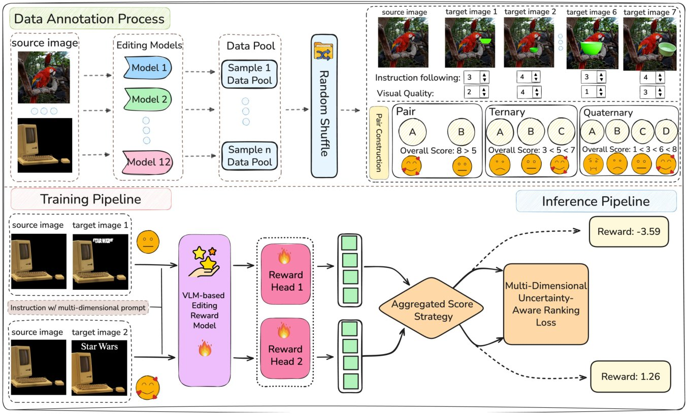
图 1：本文框架概览，展示 EditReward-Data 的构建过程以及随后奖励模型 EditReward 的训练。上半部分为数据流程：我们从多个当前最佳模型生成多样化的候选池，并收集多维度的人类偏好标注。下半部分为模型流程：EditReward 在 EditReward-Data 上用我们提出的多维不确定性感知排序损失进行优化，随后用于推理。
EditReward-Data contains 9557 instruction–image pairs collected from six established editing benchmarks: GEdit-Bench (606) (Liu et al., 2025b), ImgEdit-Bench (737) (Ye et al., 2025), MagicBrush (1,053) (Zhang et al., 2024a), AnyEdit (1,250) (Yu et al., 2025), EmuEdit (5,611) (Sheynin et al., 2024), and an internal set (300). This aggregation ensures broad coverage of semantically grounded and executable editing instructions. For each instruction, we generated 12 candidate images using six state-of-the-art models: Step1X-Edit (Liu et al., 2025b), Flux-Kontext (BlackForestLabs et al., 2025), Qwen-Image-Edit (Wu et al., 2025a), BAGEL (Deng et al., 2025), Ovis-U1 (Wang et al., 2025a), and OmniGen2 (Wu et al., 2025b), with multiple random seeds to avoid model bias. Seven candidates were randomly sampled for human evaluation. Annotators scored each image on a 4-point Likert scale (1 = Poor and 4 = Excellent) along two dimensions: Instruction Following (semantic accuracy, completeness, and no unprompted changes) and Visual Quality (plausibility, artifact-free rendering, and aesthetics). This rubric yields more informative labels than single-score schemes. Details of the annotation protocol and quality-control process are provided in the Appendix A.2. Comprehensive statistics of the dataset are provided in Table 1 and Figure 2. EditReward-Data is unique in combining large-scale, expert human annotation and a multi-dimensional scoring rubric, making it a strong foundation for training editing reward models. More representative examples from EditReward-Data are shown in the Appendix A.10. The IAA results in Table 9 provide a critical quantitative assessment of our expert annotation quality (Fleiss, 1971). We highlight the values derived from Krippendorff’s Alpha () (Krippendorff, 2011), which is the most appropriate metric as it correctly models the ordinal nature of our 4-point Likert scale. The scores of for Instruction Following (IF) and for Visual Quality (VQ) establish a strong, quantified baseline for human consistency. Crucially, the observed difference () provides empirical validation for our core contribution: it confirms that the VQ dimension is inherently more subjective than IF. This validates our design choice to use a multi-dimensional rubric and a multi-head reward model, as a single holistic score would obscure this critical difference in human variance.
EditReward-Data 包含从六个成熟编辑基准中收集的 9557 个指令—图像对：GEdit-Bench（606）（Liu et al., 2025b）、ImgEdit-Bench（737）（Ye et al., 2025）、MagicBrush（1,053）（Zhang et al., 2024a）、AnyEdit（1,250）（Yu et al., 2025）、EmuEdit（5,611）（Sheynin et al., 2024）以及一个内部集合（300）。这一聚合确保了对语义扎实、可执行的编辑指令的广泛覆盖。对每条指令，我们用六个当前最佳模型生成 12 幅候选图像：Step1X-Edit（Liu et al., 2025b）、Flux-Kontext（BlackForestLabs et al., 2025）、Qwen-Image-Edit（Wu et al., 2025a）、BAGEL（Deng et al., 2025）、Ovis-U1（Wang et al., 2025a）与 OmniGen2（Wu et al., 2025b），并使用多个随机种子以避免模型偏见。随后随机抽取七个候选供人工评估。标注者按 4 点李克特量表（1 = 差，4 = 优）在两个维度上为每幅图像打分：指令遵循（语义准确性、完整性、无未加提示的改动）与视觉质量（合理性、无伪影的渲染与美学）。这一评分细则比单一分数方案提供了信息量更丰富的标签。标注流程与质量控制过程的细节见附录 A.2。数据集的完整统计见表 1 与图 2。EditReward-Data 的独特之处在于同时具备大规模专家人工标注与多维度评分细则，这使其成为训练编辑奖励模型的坚实基础。更多来自 EditReward-Data 的代表性示例见附录 A.10。表 9 中的 IAA 结果对我们专家标注质量给出了关键的定量评估（Fleiss, 1971）。我们重点强调由 Krippendorff's Alpha（）（Krippendorff, 2011）得出的数值，它是最合适的指标，因为它正确刻画了我们 4 点李克特量表的序数性质。指令遵循（IF）上 、视觉质量（VQ）上 的 分数，为衡量人类一致性确立了强有力的量化基线。关键在于，观察到的差异（）为我们核心贡献提供了实证支持：它证实了 VQ 维度本质上比 IF 更主观。这验证了我们使用多维度评分细则与多头奖励模型的设计选择，因为单一的整体分数会掩盖人类方差上的这一关键差异。
表 1：不同生成式偏好数据集与基准的对比。
| Dataset | Scale | Task Focus | Annotation | Eval. Dims. | Limitation / Caveat |
| ImageRewardDB(Xu et al., 2024) | 137K | Visual Generation | Human | Single | Noise, limited diversity |
| VisionPrefer(Wu et al., 2025c) | 1.2M | Visual Generation | Model | Multiple | Model bias, synthetic prefs |
| GenAI-Bench(Jiang et al., 2024) | 1.6K | Generation / Editing | Human | Single | Small scale |
| HIVE(Zhang et al., 2024b) | 3.6K | Instructional Editing | Human | Single | Small reward set |
| ADIEE(Chen et al., 2025b) | 100K | Instructional Editing | Model | Single | Synthetic labels, model bias |
| HPSv3(Ma et al., 2025) | 1.17M | Visual Generation | Human | Single | Generalization limits |
| EditReward-Data | 200K | Instructional Editing | Human | Multiple | Fine-grained supervision |
| Benchmark | Scale | Annotation | Eval. Dims. | Multi-Way Preference | Pair-Wise | Point-Wise |
| GenAI-Bench-Edit(Jiang et al., 2024) | 900 | Human | Multiple | 2-way | ✓ | – |
| AURORA-Bench-Edit(Krojer et al., 2024) | 1.6K | Human | Single | 2-way | ✓ | ✓ |
| ImagenHub-Edit(Ku et al., 2024) | 1.4K | Human | Multiple | – | – | ✓ |
| EditReward-Bench | 1.5K | Human Cross-check | Multiple | 2/3/4-way | ✓ | ✓ |
表 2：专家标注的标注者间一致性（IAA）指标。稳健的 Krippendorff Alpha（）数值证实了我们多维度专家评分的高可靠性。
| Dataset | Fleiss’ Kappa (IF) | Fleiss’ Kappa (VQ) | Krippendorff Alpha (IF) | Krippendorff Alpha (VQ) |
| EditReward-Data | 0.4157 | 0.3203 | 0.6762 | 0.5720 |
| EditReward-Bench | 0.3962 | 0.3157 | 0.6623 | 0.6114 |
| All data | 0.3994 | 0.3111 | 0.6685 | 0.5972 |
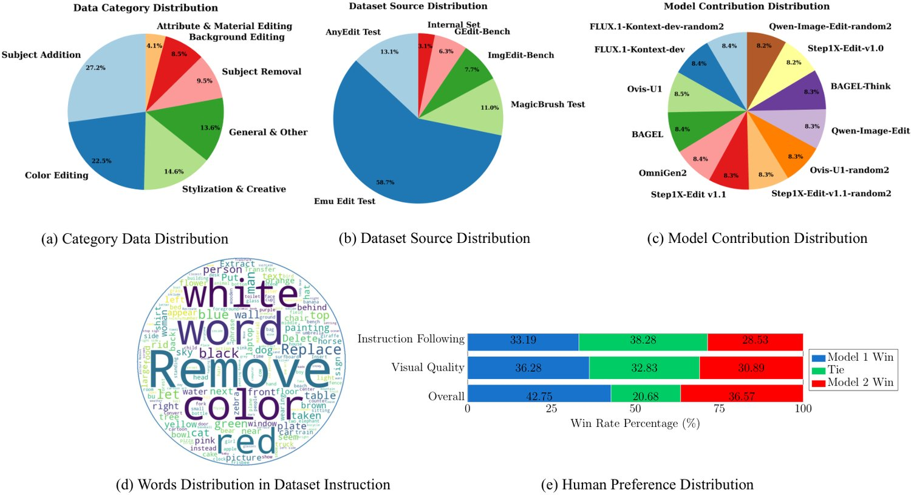
图 2：我们的 EditReward-Data 与 EditReward-Bench 的统计信息。
EditReward-Bench is designed to provide a more robust evaluation of image editing reward models than existing suites. We curated 500 high-quality groups from the EditReward-Data candidate pool, covering diverse editing categories. Each group was annotated by three independent experts using the same two-dimensional rubric (instruction following and visual quality) described in Section 2.1. We prioritized challenging cases where competing edits had small score differences to increase the discriminative power of the benchmark. The key innovation of EditReward-Bench is a multi-way preference comparison protocol that extends beyond pairwise judgments. Evaluation units include ternary (A, B, C) and quaternary (A, B, C, D) tuples, with correctness defined by simultaneously predicting all pairwise relations within the tuple. This strict criterion provides a more comprehensive and reliable test of ranking consistency than traditional pairwise accuracy. We benchmark a wide range of models on EditReward-Bench, and results are reported in Section 4. More Details of the construction of EditReward-Bench are provided in the Appendix A.3.
EditReward-Bench 旨在为图像编辑奖励模型提供比现有评测套件更稳健的评估。我们从 EditReward-Data 候选池中精心挑选了 500 个高质量组，覆盖多样化的编辑类别。每个组由三位独立专家使用第 2.1 节所述的同一套二维评分细则（指令遵循与视觉质量）进行标注。我们优先选择竞争编辑之间分数差异较小的困难样本，以提升基准的判别力。EditReward-Bench 的关键创新是一种超越成对判断的多路偏好比较协议：评估单元包括三元（A, B, C）与四元（A, B, C, D）元组，其正确性由同时正确预测该元组内所有成对关系来定义。相比传统的成对准确率，这一严格标准为排序一致性提供了更全面、更可靠的检验。我们在 EditReward-Bench 上对大量模型做了基准测试，结果见第 4 节。EditReward-Bench 构建过程的更多细节见附录 A.3。
Inspired by the success of VLMs as powerful feature extractors, we leverage a VLM as the backbone for our reward model. The task of image editing evaluation is inherently tri-modal, requiring joint reasoning over a source image (), a textual prompt (), and an edited image (). Our model is trained on human preference data, which consists of pairs of edited images, , generated from the same context.
受 VLM 作为强大特征提取器取得成功的启发，我们用一个 VLM 作为奖励模型的骨干。图像编辑评估任务本质上是三模态的，需要对源图像（）、文本提示（）与编辑后图像（）做联合推理。我们的模型在人类偏好数据上训练，这些数据由在同一 上下文下生成的成对编辑图像 构成。
Our reward model consists of two components: a multimodal backbone, (either Qwen2.5-VL (Bai et al., 2023) or Mimo-VL (Yue et al., 2025)), which computes a latent representation of the edit’s quality; and an MLP reward head, , which projects this representation to a scalar score. The score for an edited image is thus given by:
我们的奖励模型由两部分组成：多模态骨干 （Qwen2.5-VL（Bai et al., 2023）或 Mimo-VL（Yue et al., 2025）），用于计算编辑质量的潜在表示；以及 MLP 奖励头 ，把该表示映射为一个标量分数。于是编辑图像 的分数 由下式给出：
| (1) |
Here represents the VLM backbone with parameters , and is the MLP reward head with parameters . For a preference pair, the scores and are computed using Eq. 1 and are subsequently used in a preference loss function to jointly optimize the parameters and .
其中 表示参数为 的 VLM 骨干， 是参数为 的 MLP 奖励头。对于一个偏好对，分数 与 由式 1 计算，随后用于偏好损失函数中，联合优化参数 与 。
Prior reward models for generative tasks often fail to account for inconsistencies in human annotations, treating each preference label with equal certainty. This can introduce bias, particularly when judging ambiguous or challenging cases. The HPSv3 framework (Sun et al., 2025) made significant progress in text-to-image evaluation by addressing this issue. Instead of predicting a deterministic score , HPSv3 models the score as a Gaussian distribution , thereby capturing the uncertainty inherent in the data. The preference probability is then computed by integrating over the two reward distributions, leading to a more robust, probabilistic ranking.
以往的奖励模型往往不考虑人类标注中的不一致，对每个偏好标签一视同仁地给予同等确定性。这在评判模糊或困难的样本时会引入偏差。HPSv3 框架（Sun et al., 2025）在文生图评估中针对该问题取得了重要进展：HPSv3 不再预测一个确定性分数 ，而是把分数建模为高斯分布 ，从而刻画数据中固有的不确定性。偏好概率 随后通过对两个奖励分布积分得到，形成更稳健的概率化排序。
Inspired by this, we adapt and extend this uncertainty-aware paradigm for the more complex domain of instruction-guided image editing. Image editing quality is multi-faceted; an edit can be faithful to the instruction but visually unrealistic, or vice versa. To capture this complexity, our EditReward-Data provides disentangled scores across two distinct dimensions: (1) Instruction Following and (2) Visual Quality. A single, holistic uncertainty distribution as in HPSv3 is insufficient to model this rich, multi-dimensional feedback.
受此启发，我们把这一不确定性感知范式改造并扩展到更复杂的指令引导图像编辑领域。图像编辑质量是多面的：一次编辑可能忠实于指令但视觉上不真实，反之亦然。为刻画这种复杂性，我们的 EditReward-Data 在两个不同维度上提供了解耦的分数：（1）指令遵循；（2）视觉质量。像 HPSv3 那样用单一的整体不确定性分布，不足以建模这种丰富的多维反馈。
To this end, we adapt the reward head, , using a Multi-Task Learning (MTL) (Crawshaw, 2020) approach. For a single edited image sample , the reward head no longer outputs a single distribution, but rather a separate Gaussian distribution for each evaluation dimension. Let represent the two dimensions. The output for a single sample is a pair of distributions as formulated in Eq. 2:
为此，我们采用多任务学习（MTL）（Crawshaw, 2020）方法改造奖励头 。对于单个编辑图像样本 ，奖励头不再输出单一分布，而是为每个评估维度输出一个独立的高斯分布。令 表示这两个维度。单个样本 的输出是一对分布，如式 2 所示：
| (2) |
This is achieved by having the final layers of the MLP in predict a set of parameters for each input. We explore both separate and shared-parameter heads for the task. To train our model with this multi-dimensional output, we explore two distinct loss:
这通过让 中 MLP 的最后几层为每个输入预测一组参数 来实现。我们同时探索了分离参数与共享参数两种头部。为用这种多维输出训练模型，我们考察了两种不同的损失：
Multi-Dimensional Uncertainty-Aware Ranking Loss. This approach extends the probabilistic ranking framework of HPSv3 (Sun et al., 2025) to our multi-dimensional task. To do so, we must first aggregate the two predicted dimensional mean scores () for each candidate image into a single, effective mean score, . We propose and investigate three distinct aggregation strategies, which can be compactly formulated as Eq. 3:
多维不确定性感知排序损失。该方法把 HPSv3（Sun et al., 2025）的概率排序框架扩展到我们的多维任务。为此，必须先把每个候选图像 的两个预测维度均值分数（）聚合为一个有效的均值分数 。我们提出并研究了三种不同的聚合策略，可紧凑地表述为式 3：
| (3) |
The resulting aggregated means for a pair of images, along with their predicted uncertainties (), are then used to compute the final preference probability following the probabilistic method from HPSv3. The model is trained by minimizing the negative log-likelihood of the ground-truth preference as in Eq. 4:
对一对图像得到的聚合均值，连同它们预测的不确定性（），随后按 HPSv3 的概率方法计算最终的偏好概率 。模型通过最小化真实偏好的负对数似然来训练，如式 4：
| (4) |
Aggregated Score Regression. Alternatively, we frame the training as a direct regression task. This approach leverages the pointwise scores available in our EditReward-Data dataset by first aggregating the predicted distributions. Given that the sum of two independent Gaussians is also a Gaussian, the aggregated score distribution for a sample is . The model is then optimized by minimizing the Mean Squared Error (MSE) between the mean of this aggregated distribution and a transformed sum of the ground-truth scores, :
聚合分数回归。另一种做法是把训练表述为直接的回归任务。该方法利用 EditReward-Data 数据集中可用的逐点分数，先对预测分布做聚合。由于两个独立高斯之和仍是高斯，样本 的聚合分数分布为 。模型随后通过最小化该聚合分布均值与真实分数变换和 之间的均方误差（MSE）来优化：
| (5) |
This multi-dimensional uncertainty-aware approach allows our model to learn a more nuanced and disentangled representation of edit quality, leveraging the rich supervisory signal in our dataset. Ablation study comparing the loss functions and aggregation strategies is presented in Section 4.6.
这种多维不确定性感知方法使我们的模型能够学到更细致、更解耦的编辑质量表示，充分利用数据集中丰富的监督信号。关于损失函数与聚合策略的消融实验见第 4.6 节。
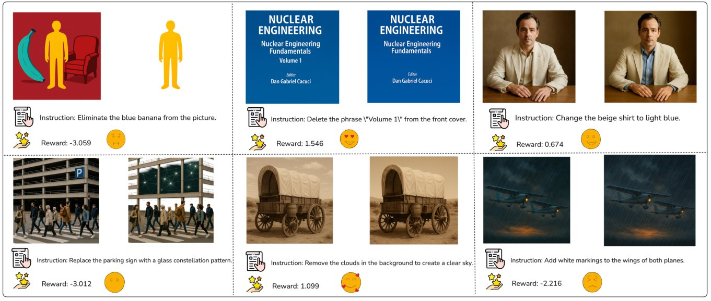
图 3：我们的奖励模型与人类判断对齐的代表性示例。
While standard models like Bradley-Terry model with ties (BTT) treat tied pairs as a single outcome (Liu et al., 2025a), we propose a novel data augmentation strategy to extract a richer supervisory signal from these ambiguous cases. Our key insight is that a tie in overall quality often masks complementary dimensional strengths. For instance, one image may excel in Instruction Following while the other has superior Visual Quality. We leverage this by decomposing each qualifying tie pair into two new training samples with opposing preference labels, and , based on their respective dimensional advantages (Eq. 6). Let be the ground-truth score for image on dimension . A tie pair where one image is preferred on the first dimension and the other is preferred on the second (e.g., and ) is duplicated and relabeled as follows:
尽管 Bradley-Terry 带平局模型（BTT）等标准做法把平局对视为单一结果（Liu et al., 2025a），我们提出一种新的数据增强策略，从这些模糊样本中抽取更丰富的监督信号。我们的核心洞察是：整体质量上的平局往往掩盖了维度上互补的优势。例如，一幅图像可能在指令遵循上更优，而另一幅的视觉质量更好。我们据此把每个符合条件的平局对 分解为两个带有相反偏好标签 与 的新训练样本，依据的是它们各自在维度上的优势（式 6）。设 为图像 在维度 上的真实分数。若某个平局对中一幅图像在第一维度上更受偏好、另一幅在第二维度上更受偏好（例如 与 ），则该对被复制并重新标注如下：
| (6) |
This strategy forces the model to reconcile seemingly contradictory signals for the same input pair, pushing it to develop a more granular understanding of nuanced trade-offs. This not only doubles the utility of our annotated tie data but also leads to a more stable training dynamic. As illustrated in Appendix A.7, our tie-disentanglement method results in a smoother training loss curve and more consistent performance gains on the validation set. Figure 3 shows some examples of our reward model giving rewards that are aligned with humans. More failure mode anaylysis of EditReward is shown in th Appendix A.13.
这一策略迫使模型为同一输入对调和看似矛盾的信号，推动其形成对细微权衡更细粒度的理解。这不仅使已标注平局数据的效用翻倍，还带来了更稳定的训练动态。如附录 A.7 所示，我们的平局解耦方法带来了更平滑的训练损失曲线与验证集上更一致的性能提升。图 3 给出了奖励模型给出与人类对齐的奖励的一些示例。EditReward 更多的失败模式分析见附录 A.13。
We train our reward model, EditReward, using 200K high-quality pairwise preference samples from our dataset. For our main experimental results, we report performance using two powerful vision-language models as backbones: Qwen2.5-VL-7B and MiMo-VL-7B. To ensure a controlled comparison, all ablation studies are conducted consistently using the Qwen2.5-VL-7B backbone. During training, all parameters of the backbone are unfrozen and set as trainable. The training is performed for 2 epochs on a cluster of 8 NVIDIA A800 GPUs. We follow the hyperparameter configuration to HPSv3, using a learning rate of with a cosine learning rate schedule and a warm-up ratio of 0.05. With a per-GPU batch size of 2, the total effective batch size is 16. For preprocessing, all training images are resized to pixels while preserving their original aspect ratios. Additional training details are provided in Appendix A.4.
我们使用数据集中 20 万条高质量的成对偏好样本训练奖励模型 EditReward。在主要实验结果中，我们报告两种强大的视觉语言模型作为骨干时的性能：Qwen2.5-VL-7B 与 MiMo-VL-7B。为保证对照比较，所有消融实验统一使用 Qwen2.5-VL-7B 骨干。训练期间，骨干的全部参数均解冻并设为可训练。训练在 8 卡 NVIDIA A800 GPU 集群上进行 2 个轮次。我们沿用 HPSv3 的超参数配置，学习率为 ，采用余弦学习率调度与 0.05 的预热比例。单卡批大小为 2，总有效批大小为 16。预处理时，所有训练图像在保持原始长宽比的前提下缩放至 像素。更多训练细节见附录 A.4。
We evaluate our approach on a suite of three established public benchmarks and our newly proposed benchmark, designed to provide a more comprehensive assessment of image editing quality.
我们在三个成熟的公开基准以及我们新提出的基准上评估本文方法，以对图像编辑质量做更全面的评估。
Existing Benchmarks. We utilize ImagenHub (Ku et al., 2024), GenAI-Bench (Jiang et al., 2024), and AURORA-Bench (Krojer et al., 2024). We explicitly confirm that we verified no overlap exists between our EditReward-Data training set and these evaluation benchmarks. They serve as fully independent, held-out testbeds, ensuring a fair and unbiased evaluation of EditReward ’s generalization. For benchmarks with point-wise annotations like ImagenHub, we measure the Spearman rank correlation to assess alignment with human scores. For ImagenHub, which includes three ratings per sample, we also compute the Human-to-Human correlation as a practical upper bound (Ku et al., 2023). For benchmarks with paired comparisons like GenAI-Bench and the pair-wise split of AURORA-Bench, we report the prediction accuracy. Additional details of the evaluation across different methods are provided in Appendix A.5.
已有基准。我们使用 ImagenHub（Ku et al., 2024）、GenAI-Bench（Jiang et al., 2024）与 AURORA-Bench（Krojer et al., 2024）。我们明确确认，已核实 EditReward-Data 训练集与这些评估基准之间不存在重叠。它们构成了完全独立的留出测试床，确保对 EditReward 泛化能力的评估公平且无偏。对 ImagenHub 等带有逐点标注的基准，我们衡量斯皮尔曼秩相关以评估与人类分数的一致性；由于 ImagenHub 每个样本包含三个评分，我们还计算人类—人类相关性作为一个实用的上界（Ku et al., 2023）。对 GenAI-Bench 等带有成对比较的基准以及 AURORA-Bench 的成对划分，我们报告预测准确率。不同方法评估的更多细节见附录 A.5。
EditReward-Bench. Derived from the held-out test split of our EditReward-Data dataset, this benchmark provides pair-wise preference labels. We report performance on EditReward-Bench using overall preference accuracy (pair-wise). We evaluated a wide range of leading models on EditReward-Bench to establish its utility. This included proprietary models such as GPT-4o, GPT-5, Gemini-2.0-Flash (Hassabis et al., 2024), and Gemini-2.5-Flash (Comanici et al., 2025), as well as prominent open-source VLMs like the Qwen2.5-VL series and MiMo-VL-7B. The experimental results, detailed in Section 4, demonstrate that EditReward-Bench effectively differentiates between models of varying capabilities and reveals challenges, such as reasoning over multiple candidates, that are not apparent in simpler pairwise benchmarks.
EditReward-Bench。该基准源自 EditReward-Data 数据集的留出测试划分，提供成对的偏好标签。我们用总体偏好准确率（成对）报告在 EditReward-Bench 上的性能。我们在 EditReward-Bench 上评估了大量领先模型以确立其效用，包括 GPT-4o、GPT-5、Gemini-2.0-Flash（Hassabis et al., 2024）与 Gemini-2.5-Flash（Comanici et al., 2025）等专有模型，以及 Qwen2.5-VL 系列与 MiMo-VL-7B 等主流开源 VLM。第 4 节详述的实验结果表明，EditReward-Bench 能有效区分能力各异的模型，并揭示在更简单的成对基准中不明显的挑战，例如对多个候选做推理。
The main results presented in Table 3 establish EditReward as a new state-of-the-art reward model for instruction-guided image editing. Our best model, EditReward (on MiMo-VL-7B), achieves top scores on the primary public benchmarks, obtaining an accuracy of 65.72% on GenAI-Bench and 63.62% on AURORA-Bench. This performance surpasses strong proprietary models like GPT-5 (59.61) and the leading open-source method ADIEE (59.96). On the point-wise ImagenHub benchmark, our model remains highly competitive with the best systems available, the Qwen2.5-VL-7B variant achieves a second-best Spearman correlation of 36.18, closely following GPT-4o.
表 3 中的主要结果确立了 EditReward 作为指令引导图像编辑新一代最佳奖励模型的地位。我们的最佳模型 EditReward（基于 MiMo-VL-7B）在主要公开基准上取得最高分，在 GenAI-Bench 上达到 65.72% 的准确率，在 AURORA-Bench 上达到 63.62%。这一表现超过了 GPT-5（59.61）等强大的专有模型以及领先的开源方法 ADIEE（59.96）。在逐点标注的 ImagenHub 基准上，我们的模型与现有最佳系统相比仍极具竞争力，Qwen2.5-VL-7B 变体取得 36.18 的斯皮尔曼相关性，位列第二，紧随 GPT-4o 之后。
表 3：公开基准与我们提出的 EditReward-Bench 上的综合结果。在 EditReward-Bench 结果中，K 表示多路偏好排序任务中的候选数量。加粗表示最佳性能，下划线表示次佳。
| Method | GenAI- | AURORA- | Imagen | EditReward-Bench | |||
| Bench | Bench | Hub | K=2 | K=3 | K=4 | Overall | |
| Random | 25.90 | 33.43 | – | 25.81 | 11.33 | 1.35 | 13.84 |
| Human-to-Human | – | – | 41.84 | – | – | – | – |
| Proprietary Models | |||||||
| GPT-4o | 53.54 | 50.81 | 38.21 | 45.69 | 27.33 | 7.31 | 28.31 |
| GPT-5 | 59.61 | 47.27 | 40.85 | 57.53 | 38.51 | 12.84 | 37.81 |
| Gemini-2.0-Flash | 53.32 | 44.31 | 23.69 | 52.43 | 33.33 | 13.51 | 33.47 |
| Gemini-2.5-Flash | 57.01 | 47.63 | 41.62 | 58.61 | 39.86 | 12.16 | 38.02 |
| Open-Source VLMs | |||||||
| Qwen2.5-VL-3B-Inst | 42.76 | 30.69 | -2.54 | 51.07 | 20.27 | 2.71 | 26.86 |
| Qwen2.5-VL-7B-Inst | 40.48 | 38.62 | 18.59 | 52.69 | 24.67 | 3.38 | 29.75 |
| Qwen2.5-VL-32B-Inst | 39.28 | 37.06 | 26.87 | 50.54 | 25.27 | 4.05 | 28.72 |
| MiMo-VL-7B-SFT-2508 | 57.89 | 30.43 | 22.14 | 49.46 | 30.41 | 9.46 | 31.19 |
| ADIEE | 59.96 | 55.56 | 34.50 | – | – | – | – |
| Reward Models (Ours) | |||||||
| EditReward (on Qwen2.5-VL-7B) | 63.97 | 59.50 | 36.18 | 56.99 | 36.00 | 10.81 | 36.78 |
| EditReward (on MiMo-VL-7B-SFT) | 65.72 | 63.62 | 35.20 | 56.45 | 42.67 | 11.49 | 38.42 |
Crucially, our results highlight the profound impact of our training paradigm itself. By applying our methodology to the base Qwen2.5-VL-7B model, we observe a massive performance uplift of over 23 points on GenAI-Bench (from 40.48% to 63.97%), demonstrating that our framework dramatically enhances a VLM’s alignment with human judgments. This capability is further validated on our challenging EditReward-Bench, where EditReward (on MiMo-VL-7B) again achieves the highest score of 38.42%, outperforming specialized models like Gemini-2.5-Flash (38.02) and GPT-5 (37.81). The strong performance of EditReward on both Qwen and MiMo-VL backbones also confirms that our framework is robust and effectively scales with more powerful base models.
关键在于，我们的结果凸显了训练范式本身的深远影响。把本文方法应用于基础 Qwen2.5-VL-7B 模型，我们观察到在 GenAI-Bench 上超过 23 个百分点的巨大性能提升（从 40.48% 提升到 63.97%），表明我们的框架大幅增强了 VLM 与人类判断的一致性。这一能力在我们更具挑战性的 EditReward-Bench 上得到进一步验证：EditReward（基于 MiMo-VL-7B）再次以 38.42% 取得最高分，优于 Gemini-2.5-Flash（38.02）与 GPT-5（37.81）等专用模型。EditReward 在 Qwen 与 MiMo-VL 两种骨干上的强劲表现也印证了本文框架的稳健性，并能随更强大的基础模型有效扩展。
To demonstrate EditReward’s practical utility as a data supervisor, we conducted a data curation experiment designed to improve a state-of-the-art editing model. We employed our reward model to score the 46,000 examples in the ShareGPT-4o-Image dataset (Chen et al., 2025a), from which we selected high-quality subsets (Top 10K, 20K, and 30K) for comparative analysis. This curated dataset was then used to fine-tune the powerful Step1X-Edit model (Liu et al., 2025b). The computational cost for scoring the samples in this pool was minimal, requiring only average 2.61 GPU hours, demonstrating high efficiency (0.25 seconds/sample).
为展示 EditReward 作为数据监督者的实用价值，我们开展了一项数据整理实验，旨在改进一个当前最佳的编辑模型。我们用奖励模型为 ShareGPT-4o-Image 数据集（Chen et al., 2025a）中的 46,000 个样本打分，并从中筛选出高质量子集（Top 10K、20K 与 30K）用于对比分析。随后用该整理后的数据集微调强大的 Step1X-Edit 模型（Liu et al., 2025b）。为该候选池中的样本打分的计算开销极小，平均仅需 2.61 GPU 小时，体现出很高的效率（0.25 秒／样本）。
表 4：当前最佳模型在 GEdit-Bench 基准英文版与中文版上、于交集集与完整测试集上的综合比较。我们的模型显著改进了基础模型 Step1X-Edit，并包含对 EditReward 整理子集（Top 10K、20K 与 30K）的敏感性分析。 表示数值越高越好。*-I 表示交集集。
| Model | GEdit-Bench-EN-I | GEdit-Bench-EN | GEdit-Bench-CN-I | GEdit-Bench-CN | ||||||||
| G_SC | G_PQ | G_O | G_SC | G_PQ | G_O | G_SC | G_PQ | G_O | G_SC | G_PQ | G_O | |
| AnyEdit (Yu et al., 2025) | 3.122 | 5.865 | 2.919 | 3.053 | 5.882 | 2.854 | 3.098 | 5.840 | 2.899 | 3.011 | 5.849 | 2.817 |
| OmniGen (Wu et al., 2025b) | 6.037 | 5.856 | 5.154 | 5.879 | 5.871 | 5.005 | 6.015 | 5.830 | 5.122 | 5.850 | 5.845 | 4.976 |
| Gemini-2.0 (Hassabis et al., 2024) | 6.816 | 7.408 | 6.483 | 6.866 | 7.436 | 6.509 | 6.790 | 7.385 | 6.450 | 6.821 | 7.402 | 6.473 |
| Doubao (Wang et al., 2025c) | 7.396 | 7.899 | 7.137 | 7.222 | 7.885 | 6.983 | 7.370 | 7.870 | 7.105 | 7.195 | 7.851 | 6.942 |
| GPT-Image-1 (OpenAI, 2025) | 7.867 | 8.097 | 7.590 | 7.743 | 8.133 | 7.494 | 7.840 | 8.075 | 7.560 | 7.708 | 8.095 | 7.451 |
| Step1X-Edit | 7.289 | 6.962 | 6.618 | 7.131 | 6.998 | 6.444 | 7.464 | 7.076 | 6.779 | 7.647 | 7.398 | 6.983 |
| Step1X-Edit + ShareGPT-4o-Image | 7.411 | 6.838 | 6.803 | 7.349 | 6.893 | 6.780 | 7.126 | 6.855 | 6.595 | 7.116 | 6.807 | 6.583 |
| Ours (EditReward as reward) (Top-K Sensitivity) | ||||||||||||
| Step1X-Edit + Ours (Top 10K) | 7.762 | 6.811 | 6.957 | 7.690 | 6.866 | 6.938 | 7.591 | 7.064 | 7.000 | 7.591 | 7.047 | 6.987 |
| Step1X-Edit + Ours (Top 30K) | 7.641 | 6.957 | 7.007 | 7.632 | 6.890 | 6.962 | 7.524 | 7.068 | 6.938 | 7.456 | 7.098 | 6.888 |
| Step1X-Edit + Ours (Top 20K) | 7.895 | 6.946 | 7.131 | 7.854 | 6.931 | 7.086 | 7.757 | 7.024 | 7.074 | 7.658 | 6.995 | 7.001 |
Evaluation Protocol. To measure the impact of this curation, we evaluate the resulting model on the comprehensive GEdit-Bench. This benchmark features both English (EN) and Chinese (CN) instructions, as well as a challenging ”Intersection” subset containing prompts that all models could process. We compare our fine-tuned model against a diverse range of baselines, including the original Step1X-Edit, the same model fine-tuned on the full unfiltered dataset, and other leading open-source and proprietary models like Doubao and GPT-Image-1. Following established practices Ku et al. (2023), performance is judged by GPT-4o on three metrics (0-10 scale): Semantic Consistency (G_SC) for instruction fidelity, Perceptual Quality (G_PQ) for visual realism, and an Overall Score (G_O) for overall quality.
评估协议。为衡量这一整理的效果，我们在全面的 GEdit-Bench 上评估所得模型。该基准同时包含英文（EN）与中文（CN）指令，以及一个具有挑战性的「交集」子集，其中的提示所有模型都能处理。我们把微调后的模型与多种基线比较，包括原始 Step1X-Edit、在未过滤完整数据集上微调的同一模型，以及 Doubao 与 GPT-Image-1 等其他领先的开源与专有模型。遵循 Ku et al. (2023) 的既有做法，性能由 GPT-4o 在三个指标上评判（0-10 分制）：语义一致性（G_SC）衡量指令忠实度，感知质量（G_PQ）衡量视觉真实感，总体分数（G_O）衡量整体质量。
Results and Analysis. As detailed in Table 4, this reward-driven filtering yields significant performance gains. The results show a clear trade-off between data quality and volume, confirming that our EditReward -filtered 20K subset represents the optimal balance for fine-tuning. Our best-performing model, trained on the Top 20K subset, achieves an English G_O score of 7.086. This substantially outperforms the original Step1X-Edit baseline (6.444) and the model trained on the full, noisy 46K dataset (6.780). Furthermore, our sensitivity analysis confirms that while the Top 10K subset (representing the highest signal-to-noise ratio) also outperforms the full set (G_O: 6.938), it is marginally inferior to the Top 20K subset, indicating the 20K size is necessary for robust generalization and avoiding underfitting. Crucially, the Top 30K subset (G_O: 6.962) yields diminishing returns compared to the Top 20K, confirming that including lower-quality data dilutes the training signal. This finding is crucial, as it confirms that data quality, as judged by our reward model, is more impactful than sheer data quantity. EditReward successfully prunes noisy examples that would otherwise degrade performance during fine-tuning. This uplift elevates the open-source Step1X-Edit to be competitive with top-tier editors like Doubao, validating our model’s potential as an essential tool for training next-generation generative models.
结果与分析。如表 4 所示，这种由奖励驱动的过滤带来了显著的性能提升。结果呈现出数据质量与数据量之间的明确权衡，证实经 EditReward 过滤的 20K 子集代表了微调的最优平衡。我们表现最好的模型在 Top 20K 子集上训练，取得 7.086 的英文 G_O 分数，大幅优于原始 Step1X-Edit 基线（6.444）以及在完整含噪 46K 数据集上训练的模型（6.780）。此外，我们的敏感性分析证实，虽然 Top 10K 子集（代表最高的信噪比）同样优于全集（G_O：6.938），但略逊于 Top 20K 子集，说明 20K 的规模对稳健泛化与避免欠拟合是必要的。关键在于，Top 30K 子集（G_O：6.962）相比 Top 20K 出现收益递减，证实纳入较低质量的数据会稀释训练信号。这一发现至关重要，因为它表明由我们的奖励模型判定的数据质量比单纯的数据数量更具影响力：EditReward 成功剪除了那些会在微调中拉低性能的噪声样本。这一提升使开源的 Step1X-Edit 具备了与 Doubao 等顶级编辑器竞争的能力，验证了我们模型作为训练下一代生成模型必备工具的潜力。
表 5：在来自 Open Images 的分布外任务（文字与风格）上的准确率比较。EditReward 在开源且成本更低的条件下取得了与 GPT-4o 相当的性能。
| Model | Text Category | Style Category | Overall |
| GPT-4o | 45.50 | 35.79 | 41.69 |
| EditReward (on MiMo-VL-7B-SFT) | 47.83 | 45.41 | 46.80 |
To evaluate robustness outside the training pool, we conducted a targeted experiment on two challenging Out-of-Distribution (OOD) categories: Text-in-Image (OCR) and Style Transfer.
为评估训练池之外的稳健性，我们针对两个具有挑战性的分布外（OOD）类别开展了定向实验：图像中的文字（OCR）与风格迁移。
Experimental Setup. We constructed a specialized OOD set sourced from Open Images (distinct from training sources), comprising 253 Text pairs and 185 Style pairs with expert annotations. We compare EditReward (on MiMo-VL-7B-SFT) against the commercial SOTA, GPT-4o.
实验设置。我们构建了一个专门的 OOD 集合，来源于 Open Images（与训练来源不同），包含 253 个文字对与 185 个风格对，均带有专家标注。我们把 EditReward（基于 MiMo-VL-7B-SFT）与商业最佳模型 GPT-4o 做比较。
Results. Table 5 shows EditReward achieves performance comparable to GPT-4o on these tasks, maintaining competitive alignment despite inherent VLM difficulties with OCR. Crucially, EditReward offers significant advantages as a cost-effective, open-source alternative with faster inference speeds.
结果。表 5 显示，EditReward 在这些任务上取得了与 GPT-4o 相当的性能，尽管 VLM 在 OCR 上存在固有困难，仍保持了有竞争力的对齐性。关键在于，EditReward 作为一种经济高效的开源替代方案具备显著优势，且推理速度更快。
表 6：关于奖励模型关键设计选择的消融研究。我们把逐点回归损失（变体 I）与我们的成对不确定性损失（变体 II、III、IV、V）比较，并进一步考察奖励头结构（共享 vs. 多头部）与不同分数聚合策略的影响。
| Variants | Model Configuration | Benchmark Performance | |||||
| Loss Type | Head Type | Aggregation | GenAI-Bench | AURORA-Bench | ImagenHub | EditReward | |
| I | Point-wise | N/A | N/A | 49.62 | 42.38 | 13.40 | 22.73 |
| II | Pair-wise | Shared | Mean | 60.17 | 56.75 | 32.65 | 36.78 |
| III | Pair-wise | Multiple | Min | 59.96 | 57.25 | 30.25 | 36.57 |
| IV | Pair-wise | Multiple | Sum | 59.63 | 55.19 | 32.93 | 37.60 |
| V | Pair-wise | Multiple | Mean | 63.97 | 59.50 | 36.18 | 36.78 |
Ablation on Model Design. We analyze our model’s key architectural choices in Table 6.
模型设计消融。我们在表 6 中分析了模型的关键架构选择。
Loss Type. Comparing loss functions (Variant I vs. V), our pair-wise uncertainty model (63.97 on GenAI-Bench) significantly outperforms the point-wise regression baseline (49.62). This confirms that modeling relative preferences is more effective than regressing on absolute scores for this task.
损失类型。比较不同损失函数（变体 I 与 V），我们的成对不确定性模型（GenAI-Bench 上 63.97）显著优于逐点回归基线（49.62）。这证实了对该任务而言，建模相对偏好比对绝对分数做回归更有效。
Head Type. For the reward head (Variant II vs. V), using multiple independent heads (63.97) provides a clear improvement over a shared architecture (60.17 on GenAI-Bench), suggesting that specialized heads better capture our disentangled evaluation dimensions.
头部类型。对于奖励头（变体 II 与 V），使用多个独立头部（63.97）相比共享结构（GenAI-Bench 上 60.17）有明显改进，说明专用头部能更好地捕捉我们解耦的评估维度。
Aggregation Strategy. Finally, we compare three score aggregation strategies (Variants III-V), finding that the balanced mean provides the most consistent and highest performance (63.97 on GenAI-Bench and 59.50 on AURORA-Bench). We therefore adopt the Pair-wise model with Multiple heads and Mean aggregation as our final configuration.
聚合策略。最后，我们比较了三种分数聚合策略（变体 III–V），发现均衡均值提供了最一致且最高的性能（GenAI-Bench 上 63.97，AURORA-Bench 上 59.50）。因此，我们采用「成对模型 + 多头部 + 均值聚合」作为最终配置。
表 7：关于不同模型参数规模与不同模型骨干的消融研究。
| Backbone | GenAI-Bench | AURORA-Bench | ImagenHub | EditReward-Bench |
| Qwen2.5-VL-3B-Inst | 62.79 | 57.37 | 32.34 | 37.40 |
| Qwen2.5-VL-7B-Inst | 63.97 | 59.50 | 36.18 | 36.78 |
| MiMo-VL-7B-SFT-2508 | 65.72 | 63.62 | 35.20 | 38.42 |
Ablation on Model Backbone. To verify our framework’s generalizability, we train EditReward on three backbones of varying scale and architecture, confirming that our method consistently benefits from stronger foundation models (Table 7). Performance increases when scaling from Qwen2.5-VL-3B to 7B, and improves further at the 7B scale when using the more advanced MiMo-VL-7B architecture, which achieves state-of-the-art scores of 65.72% on GenAI-Bench and 63.62% on AURORA-Bench. This demonstrates that our framework is backbone-agnostic and effectively leverages the capabilities of more powerful models.
模型骨干消融。为验证本文框架的通用性，我们在规模与架构各异的三个骨干上训练 EditReward，证实我们的方法能持续受益于更强的基础模型（表 7）。从 Qwen2.5-VL-3B 扩展到 7B 时性能提升；在 7B 规模下改用更先进的 MiMo-VL-7B 架构则进一步提升，在 GenAI-Bench 上达到 65.72%、在 AURORA-Bench 上达到 63.62% 的最佳分数。这表明本文框架与骨干无关，并能有效利用更强大模型的能力。
Evolution of Instruction-Guided Image Editing. Instruction-guided image editing has rapidly evolved from early trajectory-based methods. Diffusion models (Song et al., 2020; Dhariwal and Nichol, 2021; Rombach et al., 2022; Podell et al., 2023) first enabled editing via dual-prompt formulations that relied on cross-attention manipulation or inversion (Hertz et al., 2022; Mokady et al., 2023; Wallace et al., 2023). The paradigm then shifted to more user-friendly single-instruction editing, pioneered by InstructPix2Pix (Brooks et al., 2023) and refined by works like MagicBrush and Emu-Edit (Zhang et al., 2024a; Zhang et al., 2024b; Sheynin et al., 2024) that focused on curating high-quality datasets. This trajectory-based family has been further advanced by flow-matching models (BlackForestLabs et al., 2025), which improve training and sampling efficiency. In parallel, sequential generative models, including autoregressive approaches (Yu et al., 2022; Tian et al., 2024), enhance compositional reasoning. The most recent advances feature hybrid multimodal architectures like OmniGen2 (Wu et al., 2025b) and BAGEL (Deng et al., 2025), which integrate large vision–language backbones with generative decoders to enable more context-aware, conversational editing.
指令引导图像编辑的演进。指令引导图像编辑从早期的基于轨迹的方法迅速演进而来。扩散模型（Song et al., 2020; Dhariwal and Nichol, 2021; Rombach et al., 2022; Podell et al., 2023）首先通过依赖交叉注意力操控或反演的双提示形式实现编辑（Hertz et al., 2022; Mokady et al., 2023; Wallace et al., 2023）。随后范式转向更用户友好的单指令编辑，由 InstructPix2Pix（Brooks et al., 2023）开创，并由 MagicBrush 与 Emu-Edit 等工作加以完善（Zhang et al., 2024a; Zhang et al., 2024b; Sheynin et al., 2024），后者聚焦于策划高质量数据集。这一基于轨迹的路线又由流匹配模型（BlackForestLabs et al., 2025）进一步推进，提升了训练与采样效率。与此同时，包括自回归方法在内的序列生成模型（Yu et al., 2022; Tian et al., 2024）增强了组合推理能力。最新的进展以 OmniGen2（Wu et al., 2025b）与 BAGEL（Deng et al., 2025）等混合多模态架构为代表，它们把大型视觉语言骨干与生成式解码器结合，实现更具上下文感知的对话式编辑。
Evaluating Instruction-Guided Image Editing. Early evaluation of image editing relied on perceptual metrics like LPIPS (Zhang et al., 2018), but these require reference images and fail to assess semantic alignment. CLIP-based metrics (Hessel et al., 2021) were introduced for text–image consistency but also show limited correlation with human judgment (Ku et al., 2024). The advent of large vision–language models (VLMs) enabled zero-shot evaluation, with proprietary models (Ku et al., 2023; Wang et al., 2025b) demonstrating promising human correlation while open-source counterparts (Liu et al., 2023; Laurençon et al., 2024) have lagged (Jiang et al., 2024). Consequently, recent work has focused on improving open-source evaluators via fine-tuning. One strategy distills supervision from proprietary models (Wei et al., 2024; Gu et al., 2024; Wu et al., 2024), which risks inheriting model biases. The other collects direct human annotations (Xu et al., 2024; Liang et al., 2024; Wu et al., 2023; Sani et al., 2026), offering higher-quality signals but typically at a smaller scale. Our work contributes a large-scale, expert-annotated dataset, enabling more reliable and robust reward modeling for image editing.
指令引导图像编辑的评估。早期的图像编辑评估依赖 LPIPS（Zhang et al., 2018）等感知指标，但这些指标需要参考图像，且无法评估语义对齐。基于 CLIP 的指标（Hessel et al., 2021）被引入用于衡量图文一致性，但同样与人类判断的相关性有限（Ku et al., 2024）。大型视觉语言模型（VLM）的出现使零样本评估成为可能，专有模型（Ku et al., 2023; Wang et al., 2025b）展现出可喜的人类相关性，而开源同类模型（Liu et al., 2023; Laurençon et al., 2024）则相对落后（Jiang et al., 2024）。因此，近期工作聚焦于通过微调改进开源评估器。一种策略是从专有模型蒸馏监督信号（Wei et al., 2024; Gu et al., 2024; Wu et al., 2024），这有继承模型偏见的风险；另一种是收集直接的人类标注（Xu et al., 2024; Liang et al., 2024; Wu et al., 2023; Sani et al., 2026），信号质量更高但规模通常较小。我们的工作贡献了一个大规模、专家标注的数据集，使图像编辑的奖励建模更可靠、更稳健。
In this paper, we addressed the critical bottleneck hindering the advancement of open-source instruction-guided image editing: the lack of a reliable, human-aligned reward model for scaling up high-quality training data. To this end, we introduced a three-part solution: (1) EditReward-Data, a new large-scale (200K) preference dataset curated with rigorous expert annotation to minimize the noise and bias prevalent in existing resources; (2) EditReward, a dedicated reward model trained on this high-fidelity data to specialize in the image editing domain; and (3) EditReward-Bench, a challenging new benchmark featuring multi-way preference tasks to enable more robust evaluation. Our experimental results validate the effectiveness of our approach. EditReward establishes a new state of the art, demonstrating superior correlation with human judgment by outperforming strong VLM judges like GPT-5 and GPT-4o on public benchmarks. More importantly, we demonstrated its practical utility in a downstream data curation task: fine-tuning Step1X-Edit on a 20K subset of data filtered by EditReward yielded significantly better performance than training on the full 46K noisy dataset (7.1 vs. 6.7 overall score on GEdit-Bench). This confirms that a high-quality reward signal is a key ingredient for training powerful, next-generation editing models. Ultimately, this work provides both a methodology and a set of open resources to help bridge the gap between open-source and proprietary image editing models. To empower the community and facilitate future research, we will publicly release our EditReward-Data dataset, the trained EditReward model, and the EditReward-Bench benchmark.
本文针对阻碍开源指令引导图像编辑发展的关键瓶颈——缺乏可靠且与人类对齐的奖励模型来扩大高质量训练数据规模——提出了解决方案。为此，我们提出了一个由三部分构成的方案：（1）EditReward-Data，一个新的大规模（20 万条）偏好数据集，以严格的专家标注策划而成，最大限度减少现有资源中普遍存在的噪声与偏见；（2）EditReward，一个在该高保真数据上训练、专攻图像编辑领域的专用奖励模型；（3）EditReward-Bench，一个具有挑战性的新基准，包含多路偏好任务，可实现更稳健的评估。我们的实验结果验证了本文方法的有效性：EditReward 确立了新的最佳水平，在公开基准上优于 GPT-5 与 GPT-4o 等强大的 VLM 裁判，展现出与人类判断更优的相关性。更重要的是，我们在一个下游数据整理任务中展示了其实用价值：在经 EditReward 过滤的 20K 数据子集上微调 Step1X-Edit，其性能显著优于在完整含噪 46K 数据集上训练（GEdit-Bench 总分 7.1 对 6.7）。这证实了高质量奖励信号是训练强大下一代编辑模型的关键要素。归根结底，本文既提供了一种方法论，也提供了一组开放资源，有助于弥合开源与专有图像编辑模型之间的差距。为赋能社区并促进未来研究，我们将公开发布 EditReward-Data 数据集、训练好的 EditReward 模型与 EditReward-Bench 基准。
The development of advanced instruction-guided image editing models, which our work aims to evaluate and improve, carries significant ethical implications. While these technologies enable powerful creative expression, they can also be misused to generate deceptive or harmful content, such as deepfakes, misinformation, or fraudulent documents, lowering the barrier for malicious actors. Our work, by creating a more effective reward model, could inadvertently contribute to accelerating these capabilities. We acknowledge this dual-use potential and have taken steps to mitigate risks. Specifically, the EditReward-Data dataset was constructed from publicly available, non-sensitive benchmarks, and automated and manual filtering was applied to remove any personally identifiable information (PII) or sensitive content. Our reward model, EditReward, is trained to align with constructive and high-quality edits, as defined by our multi-dimensional rubric, and does not follow harmful or malicious instructions. Additionally, all generated data and model outputs will be released under a CC-BY-NC-SA 4.0 license, explicitly prohibiting commercial use, which mitigates potential misuse such as the creation of deepfakes or other harmful applications. By publicly releasing our dataset, model, and code, we aim to promote transparency and enable the research community to further study the safety, biases, and alignment of such models. Finally, we encourage the community to adopt similar safeguards, including watermarking, provenance tracking, and careful curation of training data, when deploying or extending instruction-guided image editing models.
我们工作所评估与改进的先进指令引导图像编辑模型的发展，带有重大的伦理影响。尽管这些技术支持强大的创意表达，它们也可能被滥用于生成欺骗性或有害内容，例如深度伪造、虚假信息或欺诈性文档，从而降低了恶意行为者的门槛。我们的工作通过构建更有效的奖励模型，可能无意中加速了这些能力的发展。我们承认这种双重用途的潜在可能，并已采取措施降低风险。具体地，EditReward-Data 数据集由公开可得、非敏感的基准构建而成，并经过自动与人工过滤以移除任何个人身份信息（PII）或敏感内容。我们的奖励模型 EditReward 被训练为与我们的多维度评分细则所定义的有建设性、高质量的编辑保持一致，不遵循有害或恶意的指令。此外，所有生成的数据与模型输出将以 CC-BY-NC-SA 4.0 许可发布，明确禁止商业使用，从而减轻诸如制作深度伪造或其他有害应用等潜在滥用。通过公开发布我们的数据集、模型与代码，我们旨在提升透明度，使研究界能够进一步研究此类模型的安全性、偏见与对齐问题。最后，我们鼓励社区在部署或扩展指令引导图像编辑模型时采取类似的保障措施，包括水印、来源追踪以及训练数据的审慎整理。
To ensure the reproducibility of our work, we provide the following details. All of our reward models were trained on 8 NVIDIA A800 GPUs. The evaluation of baseline models was conducted using their official public codebases and recommended configurations. For proprietary models (e.g., GPT-4o, Gemini series), we accessed their APIs between April and June 2025; given the evolving nature of these models, we have archived their specific outputs for consistency. Our new dataset, EditReward-Data, was constructed following the detailed protocol described in Section 2.1, and both the dataset and our evaluation benchmark, EditReward-Bench, will be publicly released. The complete codebase for training and evaluating our EditReward, along with the final model weights for both the Qwen2.5-VL and MiMo-VL backbones, will be made available on GitHub and Hugging Face. Further details are provided in Appendix A.4 and A.5.
为确保我们工作的可复现性，我们提供以下细节。我们所有的奖励模型均在 8 卡 NVIDIA A800 GPU 上训练。基线模型的评估使用其官方公开代码库与推荐配置进行。对于专有模型（如 GPT-4o、Gemini 系列），我们在 2025 年 4 月至 6 月期间访问其 API；鉴于这些模型不断演进，我们已存档其具体输出以保持一致性。我们的新数据集 EditReward-Data 遵循第 2.1 节所述的详细流程构建，该数据集与我们的评估基准 EditReward-Bench 都将公开发布。用于训练与评估 EditReward 的完整代码库，以及 Qwen2.5-VL 与 MiMo-VL 两种骨干的最终模型权重，将在 GitHub 与 Hugging Face 上提供。更多细节见附录 A.4 与 A.5。
Large Language Models (LLMs) were used exclusively for minor grammar correction and stylistic refinement of the manuscript. Their role was purely auxiliary, and all major scientific contributions were made by the authors. The authors bear full responsibility for the content of this work.
大语言模型（LLM）仅用于手稿的少量语法纠正与文体润色。其作用纯粹是辅助性的，所有主要的科学贡献均由作者完成。作者对本工作的全部内容负责。
Our dataset construction was centered on three principles: ecological validity, by sourcing instructions from human-vetted benchmarks; diversity, by generating candidates from state-of-the-art models; and reliability, through a rigorous multi-dimensional annotation pipeline.
我们的数据集构建围绕三条原则：生态效度，即从经人工审核的基准中获取指令；多样性，即从当前最佳模型生成候选；可靠性，即通过严格的多维度标注流程。
Source Data Collection. To ensure ecological validity, we collected 9,557 unique instruction-image pairs from six established, human-vetted sources: GEdit-Bench (606), ImgEdit-Bench (737), MagicBrush (1,053), AnyEdit (1,250), EmuEdit (5,611), and a challenging internal set (300). This aggregation provides a comprehensive foundation of semantically grounded and executable edit instructions across a wide spectrum of tasks and styles.
源数据收集。为确保生态效度，我们从六个成熟的、经人工审核的来源收集了 9,557 个唯一的指令—图像对：GEdit-Bench（606）、ImgEdit-Bench（737）、MagicBrush（1,053）、AnyEdit（1,250）、EmuEdit（5,611）以及一个具有挑战性的内部集合（300）。这一聚合为跨越广泛任务与风格的语义扎实、可执行的编辑指令提供了全面的基础。
Candidate Generation. For each of the 9,557 source pairs, we generated a diverse pool of 12 candidate images using six state-of-the-art models: Step1X-Edit (Liu et al., 2025b), Flux-Kontext (BlackForestLabs et al., 2025), Qwen-Image-Edit (Wu et al., 2025a), BAGEL (Deng et al., 2025), Ovis-U1 (Wang et al., 2025a), and OmniGen2 (Wu et al., 2025b). To ensure a broad quality spectrum and mitigate model-specific biases, we utilized multiple random seeds, preventing any single model from dominating the candidate pool.
候选生成。对 9,557 个源对中的每一个，我们用六个当前最佳模型生成包含 12 幅候选图像的多样化候选池：Step1X-Edit（Liu et al., 2025b）、Flux-Kontext（BlackForestLabs et al., 2025）、Qwen-Image-Edit（Wu et al., 2025a）、BAGEL（Deng et al., 2025）、Ovis-U1（Wang et al., 2025a）与 OmniGen2（Wu et al., 2025b）。为确保宽广的质量谱系并缓解模型特有的偏见，我们使用多个随机种子，避免任何单一模型主导候选池。
表 8：不同生成式偏好数据集与基准的详细对比。
| Dataset | Venue | Scale | Task Focus | Annotation | Eval. Dims. | Limitation / Caveat |
| ImageRewardDB | NeurIPS’23 | 137K | Visual Generation | Human | Single | Expert comparisons with limited variety |
| VisionPrefer | NeurIPS’24 | 1.2M | Generation | Model | Multiple | Multi-aspect but model-derived bias risks |
| GenAI-Bench | NeurIPS’24 | 1.6K | Generation / Editing | Human | Multiple | High quality but very small scale |
| HIVE | CVPR’24 | 3.6K | Instructional Editing | Human | Single | Task-specific, limited comparison set size |
| ADIEE | ICCV’25 | 100K | Instructional Editing | Model | Single | Synthetic labels; possible model bias |
| HPDv3 | ICCV’25 | 1.17M | Visual Generation | Human | Single | Wide-spectrum; generalizability limits |
| EditReward-Data | 200K | Instructional Editing | Human | Multiple | Large scale and fine-grained supervision |
| Benchmark | Venue | Scale | Annotation | Eval. Dims. | Multi-Way Preference | Pair-Wise | Point-Wise |
| GenAI-Bench | NeurIPS’24 | 900 | Human | Multiple | 2-way | ✓ | — |
| AURORA-Bench | NeurIPS’24 | 1.6K | Human | Multiple | 2-way | ✓ | ✓ |
| ImagenHub | ICLR’24 | 1.4K | Human + Model | Single | 2-way | — | ✓ |
| EditReward-Bench | 500 Groups (1.5K) | 3 Human (Cross-check) | Multiple | 2/3/4-way | ✓ | ✓ |
Multi-Dimensional Annotation. From the pool of 12 candidates, 7 were randomly sampled for human evaluation. Annotators provided two separate scores for each candidate on a 4-point Likert scale (1=Poor to 4=Excellent), corresponding to our two evaluation dimensions: (1) Instruction Following, which assesses semantic accuracy, completeness, and the avoidance of unprompted changes; and (2) Visual Quality, which evaluates physical plausibility, absence of artifacts, and overall aesthetic appeal. This multi-dimensional rubric provides a more granular assessment than a single holistic score. Detailed interface of the annotations is in Figure 4. We also provide detailed annotation guidance below.
多维度标注。从 12 个候选中随机抽取 7 个供人工评估。标注者按 4 点李克特量表（1=差至 4=优）为每个候选提供两个独立分数，对应我们的两个评估维度：（1）指令遵循，评估语义准确性、完整性以及是否避免了未加提示的改动；（2）视觉质量，评估物理合理性、无伪影以及整体美学吸引力。这一多维度评分细则比单一整体分数提供了更细粒度的评估。标注界面的详细信息见图 4。我们在下方也提供了详细的标注指引。
Annotation Guidelines:
标注指引：
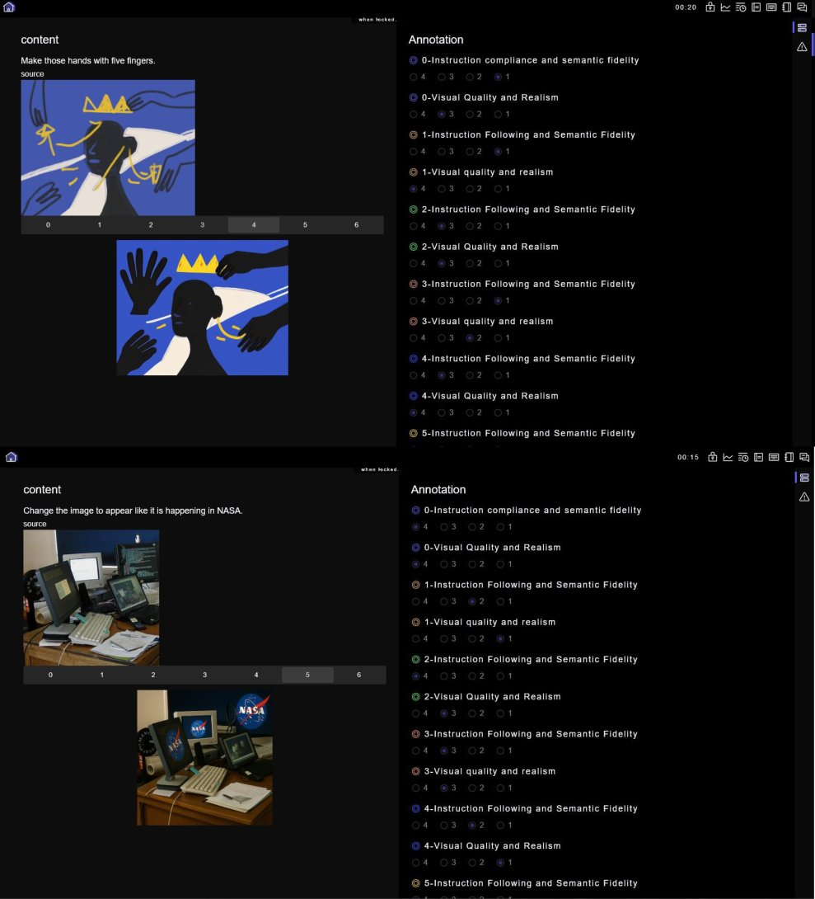
图 4：标注界面
表 9：专家标注的标注者间一致性（IAA）指标。稳健的 Krippendorff Alpha（）数值证实了我们多维度专家评分的高可靠性。
| Dataset | Fleiss’ Kappa (IF) | Fleiss’ Kappa (VQ) | Krippendorff Alpha (IF) | Krippendorff Alpha (VQ) |
| EditReward-Data | 0.4157 | 0.3203 | 0.6762 | 0.5720 |
| EditReward-Bench | 0.3962 | 0.3157 | 0.6623 | 0.6114 |
| All data | 0.3994 | 0.3111 | 0.6685 | 0.5972 |
Quality Control. The reliability of our annotations is ensured through a multi-stage process. The process includes: (1) initial pilot studies to refine the annotation guidelines and rubric; (2) a formal training and calibration phase for all annotators to align their judgments; and (3) continuous random sampling and cross-checking of annotations during the formal labeling process to maintain a high inter-annotator agreement (IAA). More representative examples from EditReward-Data are shown in the Appendix A.10. The IAA results in Table 9 provide a critical quantitative assessment of our expert annotation quality (Fleiss, 1971). We highlight the values derived from Krippendorff’s Alpha () (Krippendorff, 2011), which is the most appropriate metric as it correctly models the ordinal nature of our 4-point Likert scale. The scores of for Instruction Following (IF) and for Visual Quality (VQ) establish a strong, quantified baseline for human consistency. Crucially, the observed difference () provides empirical validation for our core contribution: it confirms that the VQ dimension is inherently more subjective than IF. This validates our design choice to use a multi-dimensional rubric and a multi-head reward model, as a single holistic score would obscure this critical difference in human variance.
质量控制。我们通过多阶段流程确保标注的可靠性：（1）先期的试点研究，用于完善标注指引与评分细则；（2）面向所有标注者的正式培训与校准阶段，以对齐他们的判断；（3）在正式标注过程中持续随机抽样与交叉核验，以维持较高的标注者间一致性（IAA）。更多来自 EditReward-Data 的代表性示例见附录 A.10。表 9 中的 IAA 结果对我们专家标注质量给出了关键的定量评估（Fleiss, 1971）。我们重点强调由 Krippendorff's Alpha（）（Krippendorff, 2011）得出的数值，它是最合适的指标，因为它正确刻画了我们 4 点李克特量表的序数性质。指令遵循（IF）上 、视觉质量（VQ）上 的 分数，为衡量人类一致性确立了强有力的量化基线。关键在于，观察到的差异（）为我们核心贡献提供了实证支持：它证实了 VQ 维度本质上比 IF 更主观。这验证了我们使用多维度评分细则与多头奖励模型的设计选择，因为单一的整体分数会掩盖人类方差上的这一关键差异。
To provide a more robust and discerning evaluation of image editing reward models, we introduce EditReward-Bench. The design of this new benchmark is motivated by several limitations identified in existing evaluation suites. For instance, ImagenHub utilizes a simple 3-point rating scale [0, 0.5, 1]. While user-friendly, this coarse granularity can fail to capture the nuanced quality differences across the broad spectrum of semantic consistency and perceptual quality (Ku et al., 2023). The editing tasks in AURORA-Bench are primarily focused on action-centric and reasoning-centric instructions, which may not represent the full diversity of common editing requests.
为对图像编辑奖励模型提供更具判别力的稳健评估，我们提出 EditReward-Bench。这一新基准的设计源于对现有评测套件若干局限的观察。例如，ImagenHub 使用简单的 3 点评分量表 [0, 0.5, 1]：虽然易用，但这种粗粒度无法捕捉语义一致性与感知质量广阔谱系上的细微质量差异（Ku et al., 2023）。AURORA-Bench 的编辑任务主要集中在以动作和以推理为中心的指令上，可能无法代表常见编辑请求的全部多样性。
To address these challenges, we constructed EditReward-Bench through a meticulous pipeline. The foundation of our benchmark is a curated subset of 500 high-quality groups sampled from our EditReward-Data candidate pool, spanning 7 distinct editing categories. To establish a reliable ground truth, we engaged three independent groups of trained expert annotators. Following the multi-dimensional rubric detailed in Section 2.1, each annotator assigned scores on a 4-point Likert scale [1, 2, 3, 4] for both instruction fidelity and visual quality. This process ensures the robustness and accuracy of our ground-truth labels. To increase the benchmark’s difficulty and test the fine-grained discriminative power of models, we prioritized the inclusion of samples where the competing edits have small differences in their average human scores.
为应对这些挑战，我们通过一套细致的流程构建了 EditReward-Bench。该基准的基础是从 EditReward-Data 候选池中采样的 500 个高质量组的精选子集，涵盖 7 个不同的编辑类别。为确立可靠的真值，我们聘请了三组独立的受训专家标注者。遵循第 2.1 节详述的多维度评分细则，每位标注者按 4 点李克特量表 [1, 2, 3, 4] 就指令忠实度与视觉质量两个维度打分。这一流程确保了真值标签的稳健性与准确性。为提升基准难度并检验模型的细粒度判别力，我们优先纳入那些竞争编辑在人类平均分上差异较小的样本。
The primary innovation of EditReward-Bench is its introduction of a multi-way preference comparison protocol, moving beyond simple pairwise judgments. We construct more complex evaluation units, including ternary tuples (A, B, C) and quaternary tuples (A, B, C, D), based on our reliable human scores. For a model’s evaluation of a tuple to be considered correct, it must correctly predict the preference relationship for all constituent pairs within that tuple (e.g., AB, AC, and BC for a ternary tuple where A is the best and C is the worst). This strict, all-or-nothing criterion provides a much more comprehensive and robust measure of a reward model’s ranking consistency and reasoning capabilities than traditional pairwise accuracy. We evaluated a wide range of leading models on EditReward-Bench to establish its utility. The experimental results are detailed in Section 4.
EditReward-Bench 的主要创新在于引入了超越简单成对判断的多路偏好比较协议。我们基于可靠的人类分数构建更复杂的评估单元，包括三元元组（A, B, C）与四元元组（A, B, C, D）。一个模型对某个元组的评估被视为正确，当且仅当它正确预测了该元组内所有构成对的偏好关系（例如对于 A 最优、C 最差的三元元组，需正确预测 AB、AC 与 BC）。相比传统的成对准确率，这种「全对才对」的严格标准为奖励模型的排序一致性与推理能力提供了更全面、更稳健的度量。我们在 EditReward-Bench 上评估了大量领先模型以确立其效用，实验结果详见第 4 节。
Dataset Details We provide additional details regarding our annotation protocol. All annotators followed a standardized rubric with clear dimension-specific guidelines, covering Instruction Following (IF) and Visual Quality (VQ). To ensure high consistency, each annotator underwent training sessions with reference examples before formal labeling.
数据集细节。我们提供关于标注流程的更多细节。所有标注者遵循标准化的评分细则，其中包含清晰的、针对各维度的指引，涵盖指令遵循（IF）与视觉质量（VQ）。为确保高度一致，每位标注者在正式标注前都要参加带有参考示例的培训。
For EDITREWARD-DATA, each edited image is scored by a single expert annotator on a 4-point scale (1–4) across the two dimensions (IF, VQ). This provides large-scale but fine-grained supervision.
对于 EDITREWARD-DATA，每幅编辑图像由一位专家标注者在两个维度（IF、VQ）上按 4 点量表（1–4）打分。这提供了大规模但细粒度的监督信号。
For EDITREWARD-BENCH, every group is annotated by three independent experts, again along the two dimensions (IF, VQ). Annotators must jointly determine the ranking consistency among multiple candidates. When disagreements occur, a cross-check protocol ensures consistency across annotators, with the final label derived from majority agreement.
对于 EDITREWARD-BENCH，每个组由三位独立专家标注，同样沿两个维度（IF、VQ）进行。标注者需共同判定多个候选之间的排序一致性。出现分歧时，交叉核验协议确保标注者之间的一致性，最终标签由多数一致决定。
This protocol guarantees both the scale and quality of the training data and the strict reliability of the benchmark.
该协议既保证了训练数据的规模与质量，也保证了基准的严格可靠性。
Reward Model Architecture. Our reward model, EditReward, is built upon a powerful pre-trained Vision-Language Model (VLM) backbone, which is fully fine-tuned during training. Our main results use two backbones: Qwen2.5-VL-7B and MiMo-VL-7B. The VLM backbone is followed by a Multi-Layer Perceptron (MLP) reward head. Based on our ablation studies, we use a Multiple Head architecture, where separate MLP heads predict the parameters () for each of the two quality dimensions independently.
奖励模型架构。我们的奖励模型 EditReward 构建在一个强大的预训练视觉语言模型（VLM）骨干之上，训练期间对该骨干做全量微调。我们的主要结果使用两种骨干：Qwen2.5-VL-7B 与 MiMo-VL-7B。VLM 骨干之后接一个多层感知机（MLP）奖励头。基于消融实验，我们采用多头部结构，即由独立的 MLP 头分别为两个质量维度预测参数（）。
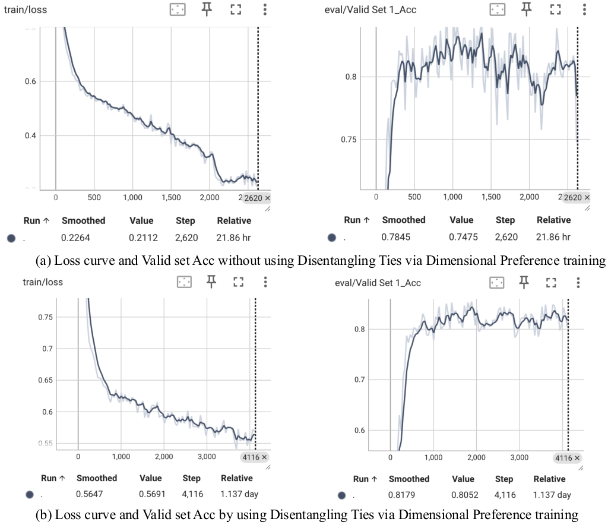
图 5：模型训练期间使用与不使用「通过维度偏好解耦平局」时的损失曲线与验证集准确率。
We present the main experimental results in Table 3. The findings clearly demonstrate that our reward model, EditReward, sets a new state of the art in aligning with human preferences for instruction-guided image editing.
我们在表 3 中给出主要实验结果。这些发现清楚地表明，我们的奖励模型 EditReward 在指令引导图像编辑上与人类偏好的一致性方面树立了新的最佳水平。
State-of-the-Art Performance. Our best model, EditReward (on MiMo-VL-7B), achieves the highest performance on three out of four benchmarks. It obtains a state-of-the-art accuracy of 65.72% on GenAI-Bench, significantly surpassing the strongest proprietary competitor, GPT-5 (59.61), and the best open-source VLM, ADIEE (59.96). Similarly, on AURORA-Bench, our model scores 63.62%, demonstrating a substantial margin over the next-best models, EditReward (on Qwen2.5-VL-7B) at 59.50% and ADIEE at 55.56%. On ImagenHub, our models remain highly competitive with the top proprietary systems, with EditReward (on Qwen2.5-VL-7B) achieving a Spearman correlation of 36.18, second only to GPT-4o.
最佳性能。我们的最佳模型 EditReward（基于 MiMo-VL-7B）在四个基准中的三个上取得最高性能。它在 GenAI-Bench 上取得 65.72% 的最佳准确率，显著超过最强的专有竞争者 GPT-5（59.61）与最佳开源 VLM ADIEE（59.96）。类似地，在 AURORA-Bench 上，我们的模型取得 63.62%，相对次优模型——EditReward（基于 Qwen2.5-VL-7B，59.50%）与 ADIEE（55.56%）——有明显优势。在 ImagenHub 上，我们的模型与顶级专有系统相比仍极具竞争力，EditReward（基于 Qwen2.5-VL-7B）取得 36.18 的斯皮尔曼相关性，仅次于 GPT-4o。
Effectiveness of Reward Modeling. A key insight from our results is the profound impact of our reward modeling framework itself. By comparing the base open-source VLMs to our EditReward trained on them, we can quantify the performance uplift. For instance, the base Qwen2.5-VL-7B-Inst scores 40.48% on GenAI-Bench. After being trained with our multi-dimensional, uncertainty-aware methodology, the resulting EditReward (on Qwen2.5-VL-7B) skyrockets to 63.97%—a massive +23.5 point improvement. This demonstrates that our contribution is not merely the application of a strong backbone, but a highly effective training paradigm that dramatically enhances a model’s alignment with human judgments.
奖励建模的有效性。我们结果中的一个关键洞察是奖励建模框架本身的深远影响。通过比较基础开源 VLM 与在其上训练得到的 EditReward，我们可以量化性能提升。例如，基础 Qwen2.5-VL-7B-Inst 在 GenAI-Bench 上得分为 40.48%；在经我们的多维度、不确定性感知方法训练后，得到的 EditReward（基于 Qwen2.5-VL-7B）飙升至 63.97%——大幅提升 23.5 个百分点。这表明我们的贡献不只是套用一个强大的骨干，而是一个极为有效的训练范式，能大幅增强模型与人类判断的一致性。
Performance on EditReward-Bench and Backbone Generalization. Our proposed benchmark, EditReward-Bench, proves to be a more challenging and discerning testbed. Here, our EditReward (on MiMo-VL-7B) again achieves the top score of 38.42%, narrowly outperforming Gemini-2.5-Flash (38.02) and GPT-5 (37.81). Notably, GPT-4o, the best-performing model on ImagenHub, scores significantly lower at 28.31, confirming that EditReward-Bench effectively identifies limitations in models that other benchmarks may miss. Finally, the strong performance of EditReward on both Qwen2.5-VL and the more powerful MiMo-VL backbone confirms that our reward modeling framework is robust and can effectively leverage the capabilities of stronger base models to push the state of the art even further.
EditReward-Bench 上的性能与骨干泛化。我们提出的基准 EditReward-Bench 被证明是更具挑战性、更具判别力的测试床。在这里，我们的 EditReward（基于 MiMo-VL-7B）再次以 38.42% 取得最高分，略优于 Gemini-2.5-Flash（38.02）与 GPT-5（37.81）。值得注意的是，在 ImagenHub 上表现最好的 GPT-4o 在此得分显著更低（28.31），证实 EditReward-Bench 能有效识别其他基准可能遗漏的模型局限。最后，EditReward 在 Qwen2.5-VL 与更强大的 MiMo-VL 骨干上都有强劲表现，印证了我们的奖励建模框架具有稳健性，并能有效利用更强基础模型的能力把最佳水平进一步推高。
Beyond direct evaluation, a key application for a powerful reward model is to improve downstream generative models through data curation. To demonstrate the practical utility of EditReward, we conducted an experiment to see if it could filter a large, noisy dataset to create a high-quality subset for fine-tuning a state-of-the-art image editing model.
除直接评估外，强大奖励模型的一个关键应用是通过数据整理改进下游生成模型。为展示 EditReward 的实用价值，我们开展了一项实验，检验它能否过滤一个含噪的大型数据集，从而为微调当前最佳图像编辑模型构建高质量子集。
Experimental Setup. Our experiment uses the open-source Step1X-Edit (Liu et al., 2025b) as the base model for fine-tuning. The training data is derived from ShareGPT-4o-Image (Chen et al., 2025a), a large dataset containing approximately 46,000 instruction-image pairs. We first employed EditReward to score every example in this dataset. We then curated a high-quality subset by selecting only the top-scoring 20,000 examples. The goal is to evaluate if fine-tuning Step1X-Edit on this smaller, curated subset yields better performance than training on the full, noisy dataset.
实验设置。我们的实验以开源模型 Step1X-Edit（Liu et al., 2025b）作为微调的基础模型。训练数据取自 ShareGPT-4o-Image（Chen et al., 2025a），这是一个包含约 46,000 个指令—图像对的大型数据集。我们首先用 EditReward 为该数据集中的每个样本打分，然后只挑选得分最高的 20,000 个样本，整理出高质量子集。目标是评估：在这个更小但经过整理的子集上微调 Step1X-Edit，是否会比在完整含噪数据集上训练取得更好的性能。
Evaluation Metrics and Baselines. We evaluate all models on GEdit-Bench, a comprehensive benchmark with English (EN) and Chinese (CN) versions, each containing a full set and a more challenging intersection (-I) split. Performance is measured across three axes: Semantic Consistency (G_SC), which evaluates how well the edit follows the instruction; Perceptual Quality (G_PQ), which assesses visual realism and aesthetics; and a holistic General Overall (G_O) score. For all metrics, higher is better.
评估指标与基线。我们在 GEdit-Bench 上评估所有模型，这是一个包含英文（EN）与中文（CN）版本的综合基准，每个版本都含完整集与更具挑战性的交集（-I）划分。性能沿三个轴衡量：语义一致性（G_SC）评估编辑遵循指令的程度；感知质量（G_PQ）评估视觉真实感与美学；以及整体的总体分数（G_O）。所有指标均为越高越好。
We compare our final model against two critical baselines to measure the impact of our data curation:
我们把最终模型与两个关键基线比较，以衡量数据整理带来的影响：
Step1X-Edit: The original model without any additional fine-tuning.
• Step1X-Edit：未做任何额外微调的原始模型。
Step1X-Edit + ShareGPT-4o-Image: The baseline model fine-tuned on the full, unfiltered ShareGPT-4o-Image dataset.
• Step1X-Edit + ShareGPT-4o-Image：在完整、未过滤的 ShareGPT-4o-Image 数据集上微调的基线模型。
This setup allows us to directly isolate the benefit of filtering with EditReward. We also compare against other leading editing models like Doubao and GPT-Image-1 to contextualize our performance.
这一设置使我们能够直接剥离出用 EditReward 过滤所带来的收益。我们还与 Doubao 与 GPT-Image-1 等其他领先的编辑模型比较，以定位我们的性能水平。
Results and Analysis. As shown in Table 4, fine-tuning Step1X-Edit on our EditReward-curated subset yields substantial improvements across all benchmarks and metrics. On the GEdit-Bench-EN Overall score (G_O), our model achieves 7.086, a significant gain over both the original Step1X-Edit (6.444) and the model trained on the full, noisy dataset (6.780).
结果与分析。如表 4 所示，在我们经 EditReward 整理的子集上微调 Step1X-Edit，在所有基准与指标上都带来了实质性提升。在 GEdit-Bench-EN 总体分数（G_O）上，我们的模型达到 7.086，相比原始 Step1X-Edit（6.444）与在完整含噪数据集上训练的模型（6.780）都有显著增益。
This result is crucial: it demonstrates that training on a smaller, higher-quality dataset curated by our reward model is more effective than training on the entire noisy dataset. EditReward successfully identifies and filters out low-quality or misaligned examples that can harm the fine-tuning process. Furthermore, this improvement elevates the performance of the open-source Step1X-Edit to be on par with, or even superior to, strong competitors like Doubao (6.983). This experiment validates the high potential of EditReward as an essential tool for data curation in the training pipelines of next-generation image editing models. In Figure x, we show how our reward model is used to score some image editing examples.
这一结果至关重要：它表明，在由我们的奖励模型整理的更小但更高质量的数据集上训练，比在整个含噪数据集上训练更有效。EditReward 成功识别并过滤掉了那些会损害微调过程的低质量或不对齐样本。此外，这一提升把开源模型 Step1X-Edit 的性能抬升到与 Doubao（6.983）等强劲竞争者相当甚至更优的水平。该实验验证了 EditReward 作为下一代图像编辑模型训练流程中数据整理必备工具的巨大潜力。在图 x 中，我们展示了奖励模型如何为若干图像编辑样本打分。
表 10：关于数据集规模与我们的平局解耦策略的消融研究。
| Variants | Ablation Setting | Benchmark Performance | ||||
| Dataset Size | Disentangling Ties | GenAI-Bench | AURORA-Bench (Pair) | ImagenHub | EditReward-Bench | |
| Direct ablation on the full dataset | ||||||
| I | 130k | 62.24 | 51.36 | 32.45 | 37.81 | |
| II | 200k | ✓ | 63.97 | 53.33 | 36.18 | 36.78 |
Ablation on Data Scale and Tie Disentanglement. Next, we investigate the combined effect of increasing our training data from 130k to 200k samples while also applying our proposed tie-disentanglement strategy. The results of this significant upgrade are presented in Table 10. Comparing our baseline model (Variant I) against our final model which incorporates both changes (Variant II), we observe consistent performance gains across all public benchmarks. The improvement is most pronounced on ImagenHub, where the score increases substantially from 32.45 to 36.18. We also see notable gains on GenAI-Bench (62.24 63.97) and AURORA-Bench (51.36 53.33). Interestingly, we note a slight performance decrease on our proposed EditReward-Bench, suggesting it may have different sensitivities to the data distribution. Overall, these results confirm the significant benefit of our full data strategy, which combines a larger, high-quality dataset with our novel technique for leveraging ambiguous tie pairs.
数据规模与平局解耦的消融。接下来，我们考察把训练数据从 13 万增加到 20 万样本、同时应用我们提出的平局解耦策略的综合效果。这一重大升级的结果见表 10。把基线模型（变体 I）与融合了这两项改动的最终模型（变体 II）比较，我们观察到在所有公开基准上都有一致的性能增益。提升在 ImagenHub 上最为显著，分数从 32.45 大幅升至 36.18。在 GenAI-Bench（62.24 63.97）与 AURORA-Bench（51.36 53.33）上也可见明显增益。有意思的是，我们注意到在我们提出的 EditReward-Bench 上有轻微的性能下降，说明它可能对该数据分布具有不同的敏感性。总体而言，这些结果证实了我们完整数据策略的显著收益——该策略把更大规模的高质量数据集与我们利用模糊平局对的新技术结合在一起。
表 11：Gemini 2.0 Flash 在 GenAI-Bench 上左／右偏条件下的偏置敏感性分析。
| Condition | Accuracy (%) |
| Left Bias | 55.28 |
| Right Bias | 50.16 |
| Bias Sensitivity (Gap) | 5.11 |
In the course of our evaluation on GenAI-Bench, we identified a notable case of bias sensitivity in the Gemini 2.0 Flash model when subjected to systematic position bias. Specifically, when we artificially manipulated the ground-truth labels to favor either left-side (AB) or right-side (BA) preferences—while correspondingly swapping the image positions to maintain correctness—we observed a consistent performance discrepancy. As shown in Table 11, the model achieved 55.28% accuracy under the left-bias condition but only 50.16% under the right-bias condition, yielding a 5.11% gap. This systematic difference indicates that the model exhibits a positional preference for left-side comparisons, which could distort evaluation outcomes if left unaddressed. To prevent such bias from affecting comparative results, GenAI-Bench adopts a randomized positioning strategy that shuffles the order of candidate images (A and B) for each comparison task. This ensures that evaluation outcomes are driven by genuine quality judgments rather than positional artifacts, thereby preserving fairness, robustness, and reliability across diverse model architectures.
在 GenAI-Bench 的评估过程中，我们发现 Gemini 2.0 Flash 模型在系统性位置偏置下存在明显的偏置敏感性。具体地，当我们人为操纵真值标签以偏向左侧（AB）或右侧（BA）偏好，同时相应交换图像位置以保持正确性时，我们观察到一致的性能差异。如表 11 所示，该模型在左偏条件下达到 55.28% 的准确率，而在右偏条件下仅为 50.16%，存在 5.11% 的差距。这一系统性差异表明该模型对左侧比较存在位置偏好，若不加以处理可能会扭曲评估结果。为防止此类偏置影响比较结果，GenAI-Bench 采用随机化定位策略，对每个比较任务打乱候选图像（A 与 B）的顺序。这确保评估结论源自真实的质量判断而非位置假象，从而在不同模型架构间保持公平性、稳健性与可靠性。
This section provides the exact input prompt template used in all experiments to guide our reward model, EditReward, in scoring the quality of an image edit.
本节给出所有实验中用于引导奖励模型 EditReward 为图像编辑质量打分的确切输入提示模板。
The following examples provide additional qualitative illustrations of EditReward-Data. They highlight a broad spectrum of real editing behaviors, including appearance manipulation, object insertion/removal, style transfer and text change. Each example includes the source image, the edited result, and the associated annotations—such as instruction-following and visual quality. These samples complement the main paper by demonstrating the dataset’s diversity, annotation fidelity, and coverage across both everyday and challenging editing scenarios.
以下示例提供了 EditReward-Data 的更多定性说明，突出了真实编辑行为的广阔谱系，包括外观操控、物体插入／移除、风格迁移与文字修改。每个示例包含源图像、编辑结果以及相应的标注（如指令遵循与视觉质量）。这些样本对正文形成补充，展示了数据集在常见与困难编辑场景下的多样性、标注保真度与覆盖范围。
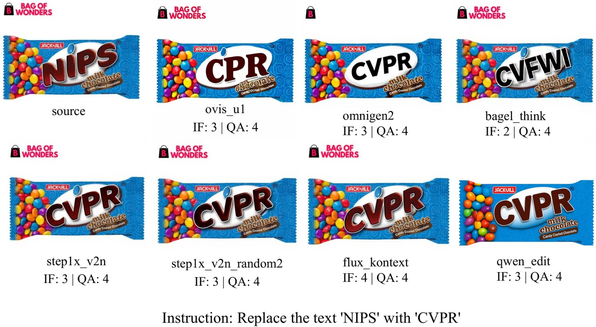
(a) 来自 EditReward-Data 的示例 1。
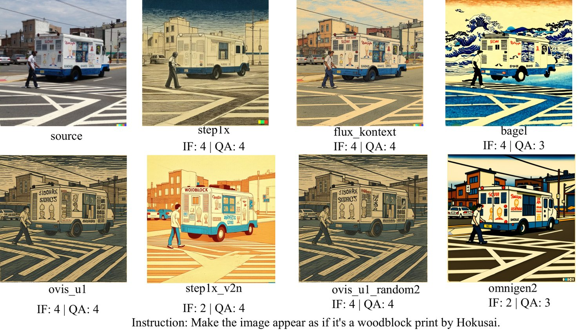
(b) 来自 EditReward-Data 的示例 2。
图 6：来自 EditReward-Data 的代表性示例，作为图 2 的补充。
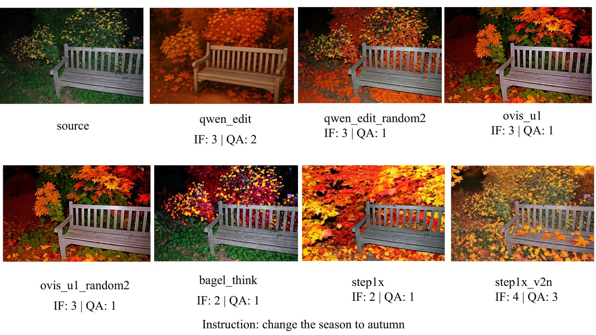
(a) 来自 EditReward-Data 的示例 3。
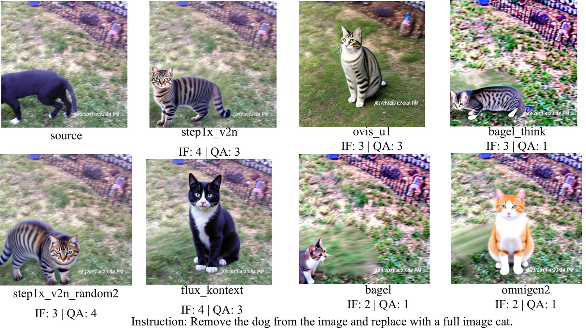
(b) 来自 EditReward-Data 的示例 4。
图 7：来自 EditReward-Data 的代表性示例，作为图 2 的补充。
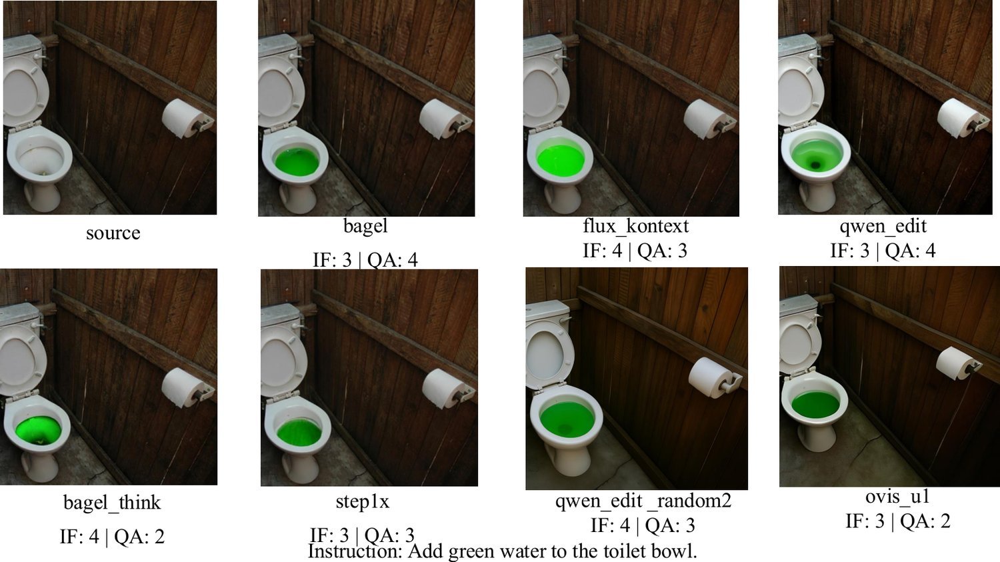
(a) 来自 EditReward-Data 的示例 5。
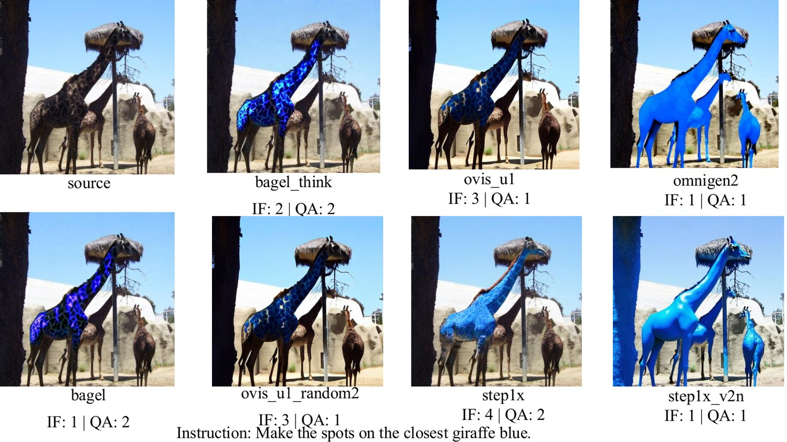
(b) 来自 EditReward-Data 的示例 6。
图 8：来自 EditReward-Data 的代表性示例，作为图 2 的补充。
To provide additional intuition about the preferences learned by EditReward-Data ’s reward model, we visualize samples from the ShareGPT-4o-Image dataset (Chen et al., 2025a) that are either retained or filtered out after ranking with EditReward scores. The selected examples highlight the characteristic patterns captured by the reward model.
为直观呈现 EditReward-Data 奖励模型所学到的偏好，我们把 ShareGPT-4o-Image 数据集（Chen et al., 2025a）中在用 EditReward 分数排序后被保留或过滤掉的样本可视化。所选示例突出了奖励模型捕捉到的特征模式。
High-Quality Retained Data. Samples with high EditReward scores generally demonstrate accurate instruction following, clean and localized modifications, and visually coherent integration with the surrounding context. These images exhibit minimal artifacts and adhere closely to both the semantic intent and spatial constraints of the edit.
被保留的高质量数据。EditReward 得分高的样本通常展现出准确的指令遵循、干净且局部化的修改，以及与周围上下文在视觉上连贯的融合。这些图像伪影极少，并紧密贴合编辑的语义意图与空间约束。
Low-Quality Filtered Data. Samples with low scores often contain undesirable visual artifacts, incorrect or incompletely executed edits, spatial misalignment, or hallucinated content. These failure patterns reflect typical challenges in image editing that violate instruction-following or degrade overall image quality.
被过滤的低质量数据。得分低的样本往往含有不理想的视觉伪影、错误或未完成的编辑、空间错位或幻觉内容。这些失败模式反映了图像编辑中违背指令遵循或降低整体图像质量的典型难题。
Together, these qualitative examples illustrate the types of editing behaviors favored or penalized by EditReward, offering a clear and interpretable view of the model’s learned preferences during data filtering.
这些定性示例共同说明了 EditReward 所偏好或惩罚的编辑行为类型，为模型在数据过滤中所学到的偏好提供了清晰且可解释的视角。
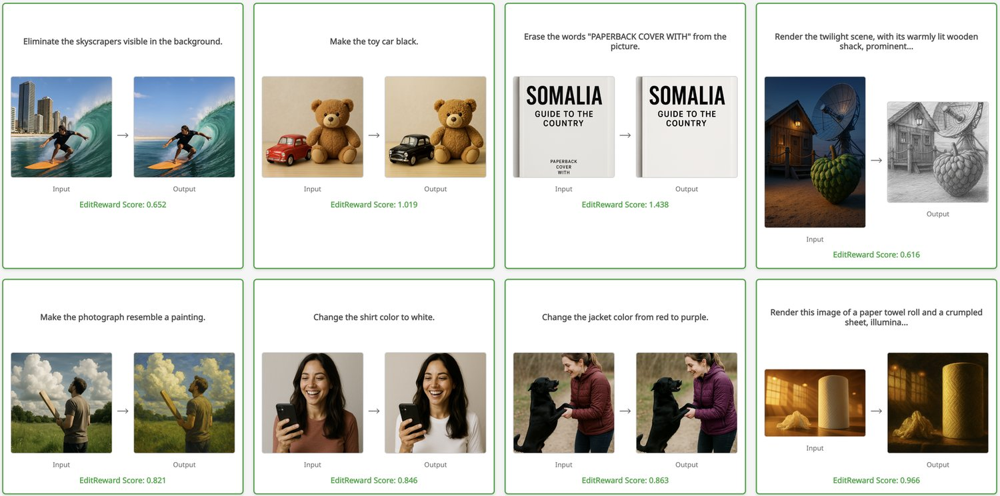
(a) 高质量图像编辑样本列表示例 1。
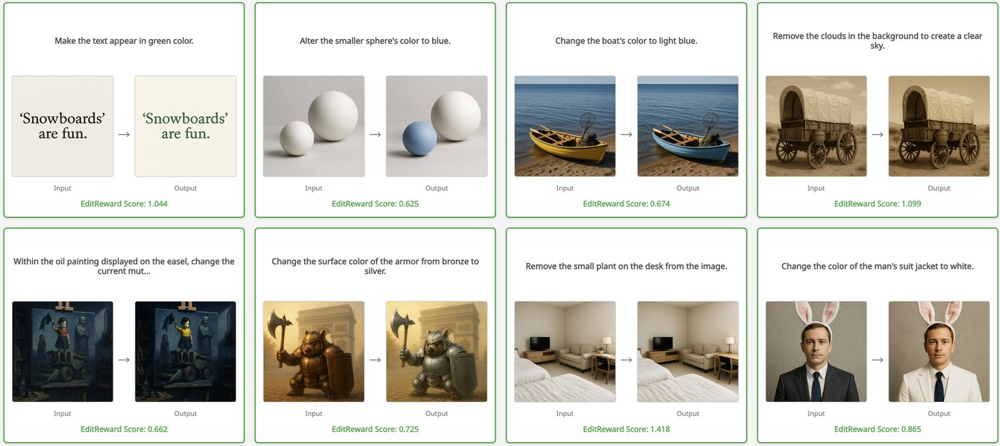
(b) 高质量图像编辑样本列表示例 2。
图 9：基于 EditReward 分数过滤后被保留的高质量图像编辑样本示例。
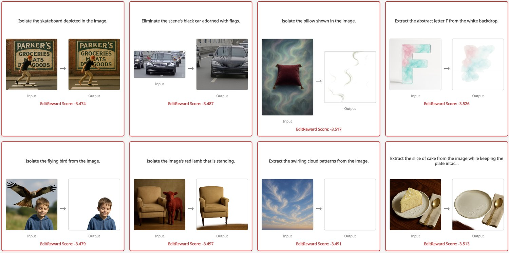
(a) 低质量图像编辑样本列表示例 1。
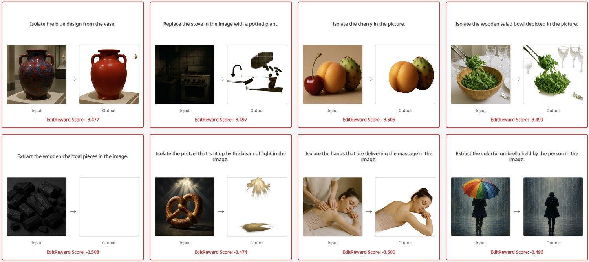
(b) 低质量图像编辑样本列表示例 2。
图 10：基于 EditReward 分数被过滤掉的低质量图像编辑样本示例。
To further illustrate the qualitative improvements enabled by EditReward-based data curation, we present side-by-side comparisons of image editing results produced by the same Step1X-Edit architecture trained on two datasets: (i) the original unfiltered dataset, and (ii) the EditReward-filtered high-quality subset.
为进一步说明基于 EditReward 的数据整理所带来的定性改进，我们并列比较了由同一 Step1X-Edit 架构在两个数据集上训练所得的图像编辑结果：（i）原始未过滤数据集；（ii）经 EditReward 过滤的高质量子集。
For each example, we show the source image, the output from the model trained on unfiltered data (Before Filter), and the output from the model trained on EditReward-curated data (After Filter). These examples cover a range of editing types, including background replacement, object insertion/removal, style and material changes, and human-centric edits.
对每个示例，我们展示源图像、在未过滤数据上训练的模型输出（过滤前）以及在 EditReward 整理数据上训练的模型输出（过滤后）。这些示例涵盖了多种编辑类型，包括背景替换、物体插入／移除、风格与材质变化，以及以人物为中心的编辑。
Qualitatively, the “After Filter” results exhibit more accurate instruction following, cleaner local modifications, fewer visual artifacts, and more coherent global integration. In contrast, models trained on unfiltered data tend to produce incomplete edits, spatial inconsistencies, or hallucinated structures. These comparisons highlight the alignment benefits of EditReward-guided data selection and validate its effectiveness in improving generation quality.
定性上看，「过滤后」的结果展现出更准确的指令遵循、更干净的局部修改、更少的视觉伪影以及更连贯的全局融合。相比之下，在未过滤数据上训练的模型往往产生不完整的编辑、空间不一致或幻觉结构。这些对比凸显了 EditReward 引导的数据选择带来的对齐收益，并验证了其在提升生成质量上的有效性。
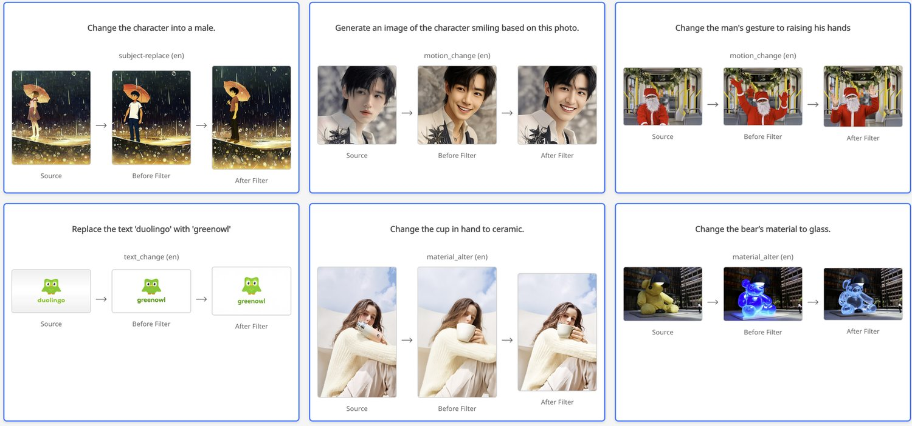
(a) 示例 1：EditReward 过滤前后所产生编辑的对比。
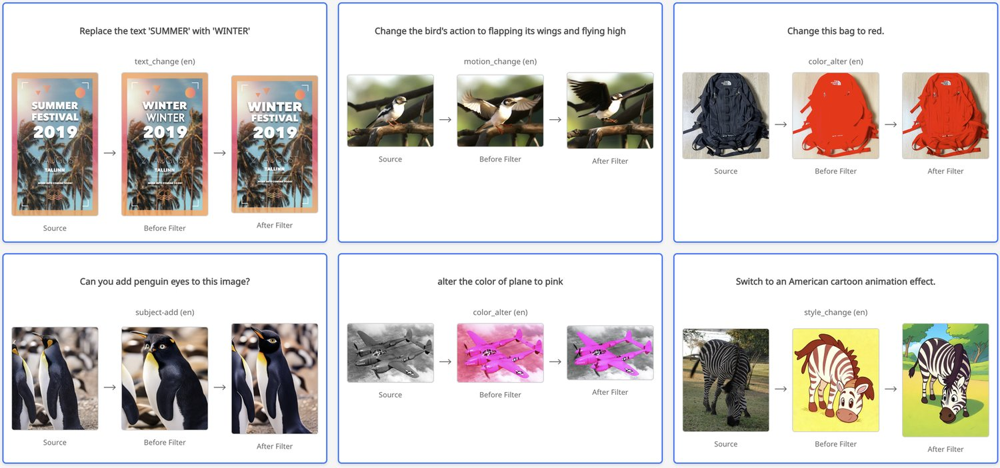
(b) 示例 2：使用与不使用 EditReward 过滤训练的 Step1X-Edit 结果的另一组对比。
图 11：在未过滤数据（过滤前）与 EditReward 整理数据（过滤后）上训练的 Step1X-Edit 模型的定性对比。每个示例展示源图像、过滤前的输出与过滤后的输出。结果表明，在经 EditReward 过滤的数据上训练可产生更准确、更稳定、更忠实的编辑。
The following analysis moves beyond generic VLM weaknesses and focuses on specific, actionable biases exhibited by EditReward when its judgment significantly deviates from the human consensus. We found two persistent failure modes:
以下分析超越了 VLM 的通用弱点，聚焦于 EditReward 在其判断显著偏离人类共识时表现出的具体、可操作的偏见。我们发现了两类持续存在的失败模式：
Visual Quality Bias (Color/Brightness): We observed that EditReward occasionally exhibits a perceptual bias toward vividness, likely inherited from its VLM pre-training. The model tends to conflate high overall visual quality with excessive brightness or high color saturation, resulting in inflated scores for edits that human judges deem over-processed or visually jarring.
1. 视觉质量偏见（色彩／亮度）：我们观察到 EditReward 偶尔表现出对鲜艳度的感知偏见，这可能是从其 VLM 预训练中继承而来。该模型倾向于把整体视觉质量高与过高的亮度或高色彩饱和度混为一谈，从而对人类评审认为过度处理或视觉上刺眼的编辑给出虚高的分数。
Global Consistency Failure (Background Over-Editing): Despite our explicit training on the ”Exclusivity” criterion, the model sometimes gives high scores to edits where the background or unedited regions were substantially and unnecessarily altered. This suggests a specific weakness in balancing local edit success against the preservation mandate.
2. 全局一致性失效（背景过度编辑）：尽管我们针对「独占性」准则做了显式训练，模型有时仍会对背景或未编辑区域被大幅且无必要改动的编辑给出高分。这表明模型在权衡局部编辑成功与保持原状要求方面存在特定弱点。
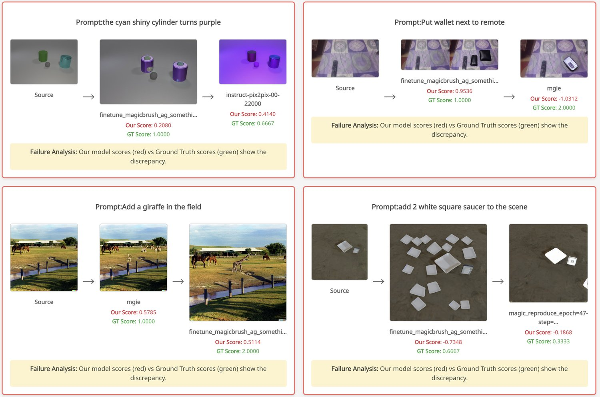
(a) 失败模式 1：亮度偏见。该图像因色彩鲜艳而从 EditReward 处获得高分（例如 3.8/4.0），尽管人类专家因其过度饱和、视觉上不合理而给出较低评分（例如 2.0）。这说明了模型倾向于奖励过高的亮度。
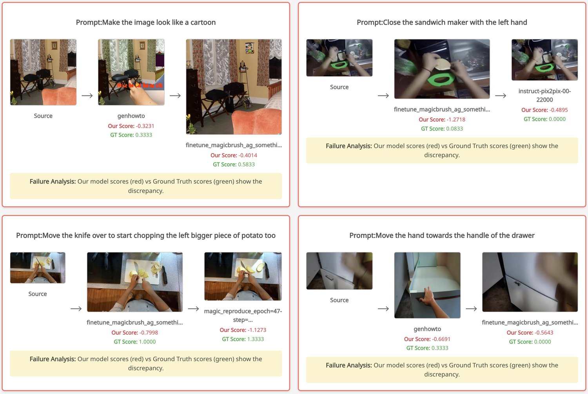
(b) 失败模式示例 2：独占性／背景失效。该编辑（例如「更换物体」）在局部是成功的，但模型仍给出了高奖励（例如 3.5/4.0），而背景被严重改动与扭曲——这明显违反了「无未加提示的改动」规则。
图 12：EditReward 奖励偏见的定性分类。这些示例说明了 EditReward 给出高分却偏离人类共识的具体情形，展示了模型对高色彩鲜艳度的继承性偏见，以及其在惩罚细微全局不一致上的困难。